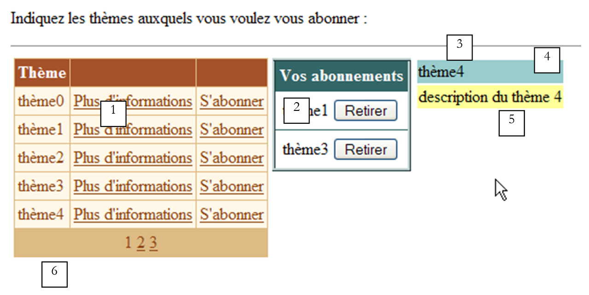
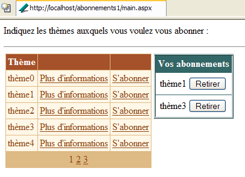
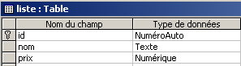
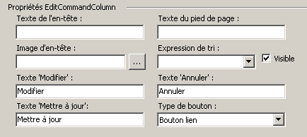
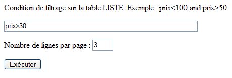
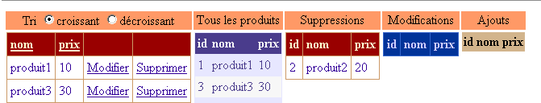
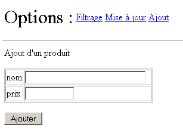
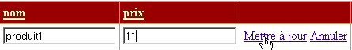
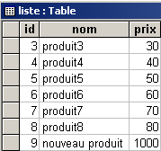
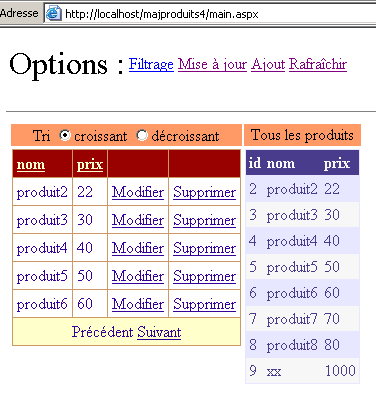

9. مكونات خادم ASP - 3
9.1. مقدمة
نواصل عملنا على واجهة المستخدم من خلال استكشاف إمكانيات مكونات [DataList] و [DataGrid]، لا سيما في مجال تحديث البيانات التي تعرضها
9.2. معالجة الأحداث المرتبطة بالبيانات في المكونات المرتبطة بالبيانات
9.2.1. المثال
انظر إلى الصفحة التالية:
 |
تتضمن الصفحة ثلاثة مكونات مرتبطة بقائمة بيانات:
- مكون [DataList] باسم [DataList1]
- مكون [DataGrid] باسم [DataGrid1]
- مكون [Repeater] باسم [Repeater1]
قائمة البيانات المرتبطة هي المصفوفة {"zero"، "one"، "two"، "three"}. ترتبط كل نقطة من نقاط البيانات هذه بمجموعة من زرين يحملان التسميتين [Info1] و [Info2]. عندما ينقر المستخدم على أحد الزرين، يعرض النص اسم الزر الذي تم النقر عليه. الهدف هنا هو توضيح كيفية إدارة قائمة من الأزرار أو الروابط.
9.2.2. تكوين المكون
يتم تكوين مكون [DataList1] على النحو التالي:
<asp:datalist id="DataList1" ... runat="server">
<SelectedItemStyle ...</SelectedItemStyle>
<HeaderTemplate>
[début]
</HeaderTemplate>
<FooterTemplate>
[fin]
</FooterTemplate>
<ItemStyle ...></ItemStyle>
<ItemTemplate>
<P><%# Container.DataItem %>
<asp:Button runat="server" Text="Infos1" CommandName="infos1"></asp:Button>
<asp:Button runat="server" Text="Infos2" CommandName="infos2"></asp:Button></P>
</ItemTemplate>
<FooterStyle ...></FooterStyle>
<HeaderStyle ...></HeaderStyle>
</asp:datalist>
لقد حذفنا كل ما يتعلق بمظهر [DataList] للتركيز فقط على محتواها:
- يحدد قسم <HeaderTemplate> رأس [DataList]، ويحدد قسم <FooterTemplate> تذييلها.
- القسم <ItemTemplate> هو قالب العرض المستخدم لكل عنصر في قائمة البيانات المرتبطة. ويحتوي على العناصر التالية:
- قيمة عنصر البيانات الحالي في قائمة البيانات المرتبطة بالمكون: <%# Container.DataItem %>
- زرين يحملان التسميتين [Info1] و [Info2] على التوالي. تحتوي فئة [Button] على سمة [CommandName] المستخدمة هنا. ستسمح لنا هذه السمة بتحديد الزر الذي أطلق حدثًا في [DataList]. لمعالجة نقرات الأزرار، سيكون لدينا معالج أحداث واحد مرتبط بـ [DataList] نفسها، وليس بالأزرار. سيتلقى هذا المعالج معلومات تشير إلى الصف الذي حدثت فيه النقرة في [DataList]. ستخبرنا السمة [CommandName] أي زر في ذلك الصف أطلق النقرة.
يتم تكوين مكون [Repeater1] بطريقة مشابهة جدًا:
<asp:repeater id="Repeater1" runat="server">
<HeaderTemplate>
[début]<hr />
</HeaderTemplate>
<FooterTemplate>
<hr />
[fin]
</FooterTemplate>
<SeparatorTemplate>
<hr />
</SeparatorTemplate>
<ItemTemplate>
<%# Container.DataItem %>
<asp:Button runat="server" Text="Infos1" CommandName="infos1"></asp:Button>
<asp:Button runat="server" Text="Infos2" CommandName="infos2"></asp:Button></P>
</ItemTemplate>
</asp:repeater>
لقد أضفنا ببساطة قسم <SeparatorTemplate> بحيث يتم فصل البيانات المتتالية التي يعرضها المكون بواسطة شريط أفقي.
أخيرًا، تم تكوين المكون [DataGrid1] على النحو التالي:
<asp:datagrid id="DataGrid1" ... runat="server" PageSize="2" AllowPaging="True">
<SelectedItemStyle ...></SelectedItemStyle>
<AlternatingItemStyle ...></AlternatingItemStyle>
<ItemStyle ...></ItemStyle>
<HeaderStyle ...></HeaderStyle>
<FooterStyle ....></FooterStyle>
<Columns>
<asp:ButtonColumn Text="Infos1" ButtonType="PushButton" CommandName="Infos1">
</asp:ButtonColumn>
<asp:ButtonColumn Text="Infos2" ButtonType="PushButton" CommandName="Infos2">
</asp:ButtonColumn>
</Columns>
<PagerStyle .... Mode="NumericPages"></PagerStyle>
</asp:datagrid>
هنا أيضًا، قمنا بحذف معلومات النمط (الألوان، والعرض، وما إلى ذلك). نحن في وضع إنشاء الأعمدة تلقائيًا، وهو الوضع الافتراضي لـ [DataGrid]. وهذا يعني أنه سيكون هناك عدد من الأعمدة يساوي عدد الأعمدة الموجودة في مصدر البيانات. هنا، يوجد عمود واحد. لقد أضفنا عمودين آخرين تم تمييزهما بـ <asp:ButtonColumn>. نحدد معلومات مشابهة لتلك المحددة للمكونين الآخرين، بالإضافة إلى نوع الزر، وهو [PushButton] هنا. النوع الافتراضي هو [LinkButton]، أي رابط. بالإضافة إلى ذلك، سيتم تقسيم البيانات إلى صفحات [AllowPaging=true] بحجم صفحة مكون من عنصرين [PageSize=2].
9.2.3. كود تخطيط الصفحة
تم وضع كود العرض لصفحتنا النموذجية في ملف باسم [main.aspx]:
<%@ page codebehind="main.aspx.vb" inherits="vs.main" autoeventwireup="false" %>
<HTML>
<HEAD>
</HEAD>
<body>
<form runat="server">
<P>Gestion d'événements de composants associés à des listes de données</P>
<HR width="100%" SIZE="1">
<table cellSpacing="1" cellPadding="1" bgColor="#ffcc00" border="1">
<tr>
<td ...>DataList</td>
<td ...>DataGrid</td>
<td ...>Repeater</td>
</tr>
<tr>
<td ...>
<asp:datalist id="DataList1" ... runat="server">
<HeaderTemplate>
[début]
</HeaderTemplate>
<FooterTemplate>
[fin]
</FooterTemplate>
<ItemStyle ...></ItemStyle>
<ItemTemplate>
<P><%# Container.DataItem %>
<asp:Button runat="server" Text="Infos1" CommandName="infos1"></asp:Button>
<asp:Button runat="server" Text="Infos2" CommandName="infos2"></asp:Button></P>
</ItemTemplate>
<FooterStyle ...></FooterStyle>
<HeaderStyle ....></HeaderStyle>
</asp:datalist>
<P></P>
</td>
<td ...>
<asp:datagrid id="DataGrid1" ... runat="server" PageSize="2" AllowPaging="True">
<AlternatingItemStyle ...></AlternatingItemStyle>
<ItemStyle ...></ItemStyle>
<HeaderStyle ...></HeaderStyle>
<FooterStyle ...></FooterStyle>
<Columns>
<asp:ButtonColumn Text="Infos1" ButtonType="PushButton" CommandName="Infos1">
</asp:ButtonColumn>
<asp:ButtonColumn Text="Infos2" ButtonType="PushButton" CommandName="Infos2">
</asp:ButtonColumn>
</Columns>
<PagerStyle ... Mode="NumericPages"></PagerStyle>
</asp:datagrid>
</td>
<td ...>
<asp:repeater id="Repeater1" runat="server">
<HeaderTemplate>
[début]<hr />
</HeaderTemplate>
<FooterTemplate>
<hr />
[fin]
</FooterTemplate>
<SeparatorTemplate>
<hr />
</SeparatorTemplate>
<ItemTemplate>
<%# Container.DataItem %>
<asp:Button runat="server" Text="Infos1" CommandName="infos1"></asp:Button>
<asp:Button runat="server" Text="Infos2" CommandName="infos2"></asp:Button></P>
</ItemTemplate>
</asp:repeater>
</td>
</tr>
</table>
<P><asp:label id="lblInfo" runat="server"></asp:label></P>
<P></P>
</form>
</body>
</HTML>
في الكود أعلاه، قمنا بحذف كود التنسيق (الألوان، الخطوط، الأحجام، إلخ)
9.2.4. كود التحكم في الصفحة
تم وضع كود التحكم في التطبيق في ملف [main.aspx.vb]:
Public Class main
Inherits System.Web.UI.Page
' components page
Protected WithEvents DataList1 As System.Web.UI.WebControls.DataList
Protected WithEvents lblInfo As System.Web.UI.WebControls.Label
Protected WithEvents DataGrid1 As System.Web.UI.WebControls.DataGrid
Protected WithEvents Repeater1 As System.Web.UI.WebControls.Repeater
' the data source
Protected textes() As String = {"zéro", "un", "deux", "trois"}
Private Sub Page_Load(ByVal sender As System.Object, ByVal e As System.EventArgs) Handles MyBase.Load
If Not IsPostBack Then
'data source links
DataList1.DataSource = textes
DataGrid1.DataSource = textes
Repeater1.DataSource = textes
Page.DataBind()
End If
End Sub
Private Sub DataList1_ItemCommand(ByVal source As Object, ByVal e As System.Web.UI.WebControls.DataListCommandEventArgs) Handles DataList1.ItemCommand
' an event has occurred on one of the [datalist] lines
lblInfo.Text = "Vous avez cliqué sur le bouton [" + e.CommandName + "] de l'élément [" + e.Item.ItemIndex.ToString + "] du composant [DataList]"
End Sub
Private Sub Repeater1_ItemCommand(ByVal source As Object, ByVal e As System.Web.UI.WebControls.RepeaterCommandEventArgs) Handles Repeater1.ItemCommand
' an event has occurred on one of the [repeater] lines
lblInfo.Text = "Vous avez cliqué sur le bouton [" + e.CommandName + "] de l'élément [" + e.Item.ItemIndex.ToString + "] du composant [Repeater]"
End Sub
Private Sub DataGrid1_ItemCommand(ByVal source As Object, ByVal e As System.Web.UI.WebControls.DataGridCommandEventArgs) Handles DataGrid1.ItemCommand
' an event has occurred on one of the [datagrid] lines
lblInfo.Text = "Vous avez cliqué sur le bouton [" + e.CommandName + "] de l'élément [" + e.Item.ItemIndex.ToString + "] de la page [" + DataGrid1.CurrentPageIndex.ToString() + "] du composant [DataGrid]"
End Sub
Private Sub DataGrid1_PageIndexChanged(ByVal source As Object, ByVal e As System.Web.UI.WebControls.DataGridPageChangedEventArgs) Handles DataGrid1.PageIndexChanged
' change page
With DataGrid1
.CurrentPageIndex = e.NewPageIndex
.DataSource = textes
.DataBind()
End With
End Sub
End Class
تعليقات:
- مصدر البيانات [textes] هو مصفوفة بسيطة من السلاسل. سيتم ربطه بالمكونات الثلاثة الموجودة على الصفحة
- يتم إنشاء هذا الربط في الإجراء [Page_Load] أثناء الطلب الأول. بالنسبة للطلبات اللاحقة، ستسترد المكونات الثلاثة قيمها عبر آلية [VIEW_STATE].
- تحتوي المكونات الثلاثة على معالج لحدث [ItemCommand]. يحدث هذا الحدث عند النقر فوق زر أو رابط في أحد صفوف المكون. يتلقى المعالج معلومتين:
- المصدر: الإشارة إلى الكائن (زر أو رابط) الذي أطلق الحدث
- a: معلومات حول الحدث من النوع [DataListCommandEventArgs] أو [RepeaterCommandEventArgs] أو [DataGridCommandEventArgs]، حسب الاقتضاء. تحمل الحجة a معلومات متنوعة. وهنا، هناك معلومتان تهماننا:
- a.Item: يمثل الصف الذي وقع فيه الحدث، من النوع [DataListItem] أو [DataGridItem] أو [RepeaterItem]. بغض النظر عن النوع الدقيق، يحتوي عنصر [Item] على سمة [ItemIndex] تشير إلى رقم الصف الخاص بـ [Item] في الحاوية التي ينتمي إليها. هنا، نعرض رقم الصف هذا
- a.CommandName: هي سمة [CommandName] للزر (Button، LinkButton، ImageButton) الذي أطلق الحدث. تسمح لنا هذه المعلومات، جنبًا إلى جنب مع المعلومات السابقة، بتحديد الزر الذي أطلق حدث [ItemCommand] في الحاوية
9.3. التطبيق - إدارة قائمة الاشتراكات
الآن بعد أن عرفنا كيفية اعتراض الأحداث التي تحدث داخل حاوية البيانات، نقدم مثالاً يوضح كيفية التعامل معها.
9.3.1. مقدمة
يحاكي التطبيق المعروض هنا تطبيق اشتراك في قائمة بريدية. يتم تعريف هذه القوائم بواسطة كائن [DataTable] مكون من ثلاثة أعمدة:
الاسم | النوع | الدور |
سلسلة | المفتاح الأساسي | |
سلسلة | قائمة اسم الموضوع | |
سلسلة | وصف للمواضيع التي تغطيها القائمة |
لإبقاء مثالنا بسيطًا، سيتم إنشاء كائن [DataTable] أعلاه برمجيًا بطريقة عشوائية. في تطبيق حقيقي، من المرجح أن يتم توفيره بواسطة طريقة لفئة الوصول إلى البيانات. سيتم إنشاء جدول القائمة في الإجراء [Application_Start]، وسيتم تخزين الجدول الناتج في التطبيق. سنسميه جدول [dtThèmes]. سيقوم المستخدم بالاشتراك في مواضيع معينة من هذا الجدول. سيتم تخزين قائمة اشتراكاتهم في كائن [DataTable] يسمى [dtAbonnements]، والذي سيكون له الهيكل التالي:
name | النوع | الدور |
سلسلة | المفتاح الأساسي | |
سلسلة | قائمة اسم السمة |
التطبيق أحادي الصفحة هو كما يلي:
 | |||||
رقم | الاسم | النوع | الخصائص | الدور | |
DataGrid | قوائم البريد المتاحة للاشتراك | ||||
DataList | قائمة اشتراكات المستخدم في القوائم السابقة | ||||
panel | لوحة معلومات حول الموضوع الذي اختاره المستخدم مع رابط [مزيد من المعلومات] | ||||
التسمية | جزء من [panelInfos] | اسم السمة | |||
التسمية | جزء من [panelInfos] | وصف السمة | |||
التسمية | رسالة معلومات التطبيق | ||||
يهدف مثالنا إلى توضيح استخدام مكونات [DataGrid] و [DataList]، ولا سيما معالجة الأحداث التي تحدث على مستوى الصفوف في حاويات البيانات هذه. ولذلك، لا يحتوي التطبيق على زر إرسال يحفظ اختيارات المستخدم في قاعدة بيانات، على سبيل المثال. ومع ذلك، فهو واقعي. نحن قريبون من تطبيق للتجارة الإلكترونية حيث يضيف المستخدم منتجات (اشتراكات) إلى سلة التسوق الخاصة به.
9.3.2. الوظائف
الطريقة الأولى التي يراها المستخدم هي كما يلي:
 |
ينقر المستخدم على روابط [مزيد من المعلومات] للحصول على تفاصيل حول موضوع ما. يتم عرض هذه التفاصيل في [panelInfos]:

ينقر المستخدم على روابط [Subscribe] للاشتراك في موضوع ما. تضاف الموضوعات المحددة إلى مكون [dlSubscriptions]:

قد يرغب المستخدم في الاشتراك في قائمة هو مشترك فيها بالفعل. تنبهه رسالة إلى ذلك:

أخيرًا، يمكنه إلغاء الاشتراك في أي من المواضيع باستخدام أزرار [إلغاء الاشتراك] أعلاه. لا يلزم تأكيد. وهذا ليس ضروريًا هنا لأن المستخدم يمكنه إعادة الاشتراك بسهولة. إليك الشاشة بعد إلغاء الاشتراك في [topic1]:

9.3.3. تكوين حاويات البيانات
تم ربط المكون [dgThèmes] من النوع [DataGrid] بمصدر من النوع [DataTable]. وقد تم تنسيقه باستخدام الرابط [Auto Format] الموجود في لوحة خصائص [DataGrid]. كما تم تعريف خصائصه باستخدام الرابط [Property Generator] الموجود في نفس اللوحة. وفيما يلي الشفرة التي تم إنشاؤها (تم حذف شفرة التنسيق):
<asp:datagrid id="dgThèmes" AutoGenerateColumns="False" AllowPaging="True" PageSize="5"
runat="server">
<ItemStyle ...></ItemStyle>
<HeaderStyle ...></HeaderStyle>
<FooterStyle ...></FooterStyle>
<Columns>
<asp:BoundColumn DataField="thème" HeaderText="Thème"></asp:BoundColumn>
<asp:ButtonColumn Text="Plus d'informations" CommandName="infos"></asp:ButtonColumn>
<asp:ButtonColumn Text="S'abonner" CommandName="abonner"></asp:ButtonColumn>
</Columns>
<PagerStyle HorizontalAlign="Center" ... Mode="NumericPages"></PagerStyle>
</asp:datagrid>
يرجى ملاحظة النقاط التالية:
نقوم بتحديد الأعمدة المراد عرضها بأنفسنا في قسم <columns>...</columns> | |
لتقسيم البيانات إلى صفحات | |
يحدد عمود [theme] (HeaderText) في [DataGrid] الذي سيتم ربطه بعمود [theme] في مصدر البيانات (DataField) | |
يحدد عمودين من الأزرار (أو الروابط). وللتمييز بين الرابطين الموجودين في نفس الصف، سنستخدم خاصية [CommandName] الخاصة بهما. |
لم يتم تكوين مكون [DataGrid] بالكامل. سيتم تكوينه في كود وحدة التحكم.
يتم ربط المكون [dlAbonnements] من النوع [DataList] بمصدر من النوع [DataTable]. تم تنسيقه باستخدام الرابط [AutoFormat] في لوحة خصائص [DataList]. تم تعريف خصائصه مباشرة في كود العرض. هذا الكود هو كما يلي (تم حذف كود التنسيق):
<asp:DataList id="dlAbonnements" ... runat="server" >
<HeaderTemplate>
<div align="center">
Vos abonnements</div>
</HeaderTemplate>
<ItemStyle ...></ItemStyle>
<ItemTemplate>
<TABLE>
<TR>
<TD><%#Container.DataItem("thème")%></TD>
<TD>
<asp:Button id="lnkRetirer" CommandName="retirer" runat="server" Text="Retirer" /></TD>
</TR>
</TABLE>
</ItemTemplate>
<HeaderStyle ...></HeaderStyle>
</asp:DataList>
يحدد نص رأس [DataList] | |
يحدد العنصر الحالي في [DataList]—هنا وضعنا جدولاً مكوناً من عمودين وصف واحد. ستحتوي الخلية الأولى على اسم الموضوع الذي يرغب المستخدم في الاشتراك فيه، وستحتوي الخلية الأخرى على زر [Unsubscribe]، الذي يسمح للمستخدم بإلغاء اختياره. |
9.3.4. صفحة العرض
رمز العرض [main.aspx] هو كما يلي:
<%@ page src="main.aspx.vb" inherits="main" autoeventwireup="false" %>
<HTML>
<HEAD>
<title></title>
</HEAD>
<body>
<P>Indiquez les thèmes auxquels vous voulez vous abonner :</P>
<HR width="100%" SIZE="1">
<form runat="server">
<table>
<tr>
<td vAlign="top">
<asp:datagrid id="dgThèmes" ... runat="server">
...
</asp:datagrid>
</td>
<td vAlign="top">
<asp:DataList id="dlAbonnements" ... runat="server" GridLines="Horizontal" ShowFooter="False">
....
</asp:DataList>
</td>
<td vAlign="top">
<asp:Panel ID="panelInfo" Runat="server" EnableViewState="False">
<TABLE>
<TR>
<TD bgColor="#99cccc">
<asp:Label id="lblThème" runat="server"></asp:Label></TD>
</TR>
<TR>
<TD bgColor="#ffff99">
<asp:Label id="lblDescription" runat="server"></asp:Label></TD>
</TR>
</TABLE>
</asp:Panel>
</td>
</tr>
</table>
<P>
<asp:Label id="lblInfo" runat="server" EnableViewState="False"></asp:Label></P>
</form>
</body>
</HTML>
9.3.5. وحدات التحكم
يتم توزيع منطق التحكم بين ملفات [global.asax] و [main.aspx]. ملف [global.asax] هو كما يلي:
يحتوي الملف [global.asax.vb] المرتبط على الكود التالي:
Imports System.Web
Imports System.Web.SessionState
Imports System.Data
Imports System
Public Class global
Inherits System.Web.HttpApplication
Sub Application_Start(ByVal sender As Object, ByVal e As EventArgs)
' initialize the data source
Dim thèmes As New DataTable
' columns
With thèmes.Columns
.Add("id", GetType(System.Int32))
.Add("thème", GetType(System.String))
.Add("description", GetType(System.String))
End With
' column id will be primary key
thèmes.Constraints.Add("cléprimaire", thèmes.Columns("id"), True)
' lines
Dim ligne As DataRow
For i As Integer = 0 To 10
ligne = thèmes.NewRow
ligne.Item("id") = i.ToString
ligne.Item("thème") = "thème" + i.ToString
ligne.Item("description") = "description du thème " + i.ToString
thèmes.Rows.Add(ligne)
Next
' put the data source in the application
Application("thèmes") = thèmes
End Sub
Sub Session_Start(ByVal sender As Object, ByVal e As EventArgs)
' start of session - create an empty subscriptions table
Dim dtAbonnements As New DataTable
With dtAbonnements
' the columns
.Columns.Add("id", GetType(String))
.Columns.Add("thème", GetType(String))
' the primary key
.PrimaryKey = New DataColumn() {.Columns("id")}
End With
' the table is placed in the session
Session.Item("abonnements") = dtAbonnements
End Sub
End Class
تقوم الإجراء [Application_Start]، الذي يتم تنفيذه عندما يتلقى التطبيق أول طلب له، بإنشاء [DataTable] للمواضيع التي يمكن الاشتراك فيها. يتم إنشاؤه بشكل تعسفي باستخدام الكود. تذكر التقنية التي سبق أن تعرفنا عليها. نقوم بالإنشاء بالترتيب التالي:
- كائن [DataTable] فارغ، بدون هيكل وبدون بيانات
- هيكل الجدول عن طريق تحديد أعمدةه (الاسم ونوع البيانات)
- صفوف الجدول التي تمثل البيانات المفيدة
هنا أضفنا مفتاحًا أساسيًا. يعمل العمود "id" كمفتاح أساسي. هناك عدة طرق للتعبير عن ذلك. هنا، استخدمنا قيدًا. في SQL، القيد هو قاعدة يجب أن تتبعها البيانات في الصف حتى يتم إضافة هذا الصف إلى الجدول. هناك جميع أنواع القيود الممكنة. يفرض قيد "المفتاح الأساسي" على العمود الذي يتم تطبيقه عليه أن يحتوي على قيم فريدة وغير فارغة. يمكن أن يتكون المفتاح الأساسي في الواقع من تعبير يتضمن قيمًا من أعمدة متعددة. [DataTable].Constraints هي مجموعة القيود لجدول معين. لإضافة قيد، نستخدم الأسلوب [DataTable.Constraints.Add]. يحتوي هذا الأسلوب على عدة توقيعات. هنا، استخدمنا الأسلوب [Add(Byval name as String, Byval column as DataColumn, Byval primaryKey as Boolean)]:
اسم القيد - يمكن أن يكون أي شيء | |
العمود الذي سيكون المفتاح الأساسي - من النوع [DataColumn] | |
يجب تعيينه إلى [true] لجعل [column] مفتاحًا أساسيًا. إذا كان [primaryKey=false]، فإن القيد الفريد فقط هو الذي ينطبق على [column] |
لجعل العمود المسمى "id" المفتاح الأساسي لجدول [dtAbonnements]، نكتب:
الإجراء [Session_Start]، الذي يتم تنفيذه عندما يتلقى التطبيق الطلب الأول من عميل. ويُستخدم لإنشاء كائنات خاصة بكل عميل يجب أن تستمر عبر الطلبات المختلفة للعميل. يقوم الإجراء بإنشاء [DataTable] لاشتراكات العميل. يتم إنشاء هيكله فقط، لأن هذا الجدول فارغ في البداية. وسيتم ملؤه مع تقديم الطلبات. هنا أيضًا، يعمل عمود "id" كمفتاح أساسي. استخدمنا تقنية مختلفة لإعلان هذا القيد:
هو مصفوفة الأعمدة التي تشكل المفتاح الأساسي — وقد أعلنا هنا مصفوفة ذات عنصر واحد: العمود المسمى "id" |
عندما يصل طلب العميل إلى وحدة التحكم [main.aspx]، يتوفر كلا كائني [DataTable] في التطبيق لجدول السمات وفي الجلسة لجدول الاشتراكات. وحدة التحكم [main.aspx.vb] هي كما يلي:
Imports System.Data
Public Class main
Inherits System.Web.UI.Page
Protected WithEvents dgThèmes As System.Web.UI.WebControls.DataGrid
Protected WithEvents lblThème As System.Web.UI.WebControls.Label
Protected WithEvents lblDescription As System.Web.UI.WebControls.Label
Protected WithEvents dlAbonnements As System.Web.UI.WebControls.DataList
Protected WithEvents lblInfo As System.Web.UI.WebControls.Label
Protected WithEvents panelInfo As System.Web.UI.WebControls.Panel
Protected dtThèmes As DataTable
Protected dtAbonnements As DataTable
Private Sub Page_Load(ByVal sender As System.Object, ByVal e As System.EventArgs) Handles MyBase.Load
...
End Sub
Private Sub liaisons()
...
End Sub
Private Sub dgThèmes_PageIndexChanged(ByVal source As Object, ByVal e As System.Web.UI.WebControls.DataGridPageChangedEventArgs) Handles dgThèmes.PageIndexChanged
...
End Sub
Private Sub dgThèmes_ItemCommand(ByVal source As Object, ByVal e As System.Web.UI.WebControls.DataGridCommandEventArgs) Handles dgThèmes.ItemCommand
...
End Sub
Private Sub infos(ByVal id As String)
...
End Sub
Private Sub abonner(ByVal id As String)
...
End Sub
Private Sub dlAbonnements_ItemCommand(ByVal source As Object, ByVal e As System.Web.UI.WebControls.DataListCommandEventArgs) Handles dlAbonnements.ItemCommand
...
End Sub
End Class
تتمثل المهمة الأساسية لإجراء [Page_Load] في:
- استرداد الجدولين [dtThèmes] و [dtAbonnements]، الموجودين في التطبيق والجلسة على التوالي، لإتاحتهما لجميع الطرق الموجودة على الصفحة
- ربط البيانات من هذين المصدرين بالحاويات الخاصة بهما. ويتم ذلك فقط أثناء الطلب الأول. بالنسبة للطلبات اللاحقة، لا يلزم إجراء الربط بشكل منهجي، وعندما يكون ذلك ضروريًا، قد يكون من الضروري في بعض الأحيان انتظار حدوث حدث بعد [Page_Load] لإجراء ذلك.
فيما يلي كود [Page_Load]:
Private Sub Page_Load(ByVal sender As System.Object, ByVal e As System.EventArgs) Handles MyBase.Load
' retrieve data sources
dtThèmes = CType(Application("thèmes"), DataTable)
dtAbonnements = CType(Session("abonnements"), DataTable)
' data link
If Not IsPostBack Then
liaisons()
End If
' we hide certain information
panelInfo.Visible = False
End Sub
Private Sub liaisons()
'link the data source to the [datagrid] component
With dgThèmes
.DataSource = dtThèmes
.DataKeyField = "id"
End With
' link the data source to the [datalist] component
With dlAbonnements
.DataSource = dtAbonnements
.DataKeyField = "id"
End With
' assign data to components
Page.DataBind()
End Sub
في الإجراء [Bindings]، نستخدم الخاصية [DataKeyField] لمكونات [DataList] و [DataGrid] لتعريف العمود في مصدر البيانات الذي سيتم استخدامه لتعريف الصفوف في الحاويات بشكل فريد. عادةً ما يكون هذا العمود هو المفتاح الأساسي لمصدر البيانات، ولكن هذا ليس إلزاميًا. يكفي أن يكون العمود خاليًا من التكرارات والقيم الفارغة. بالنسبة للحاوية [dgThemes]، سيكون العمود "id" في مصدر [dtThemes] بمثابة المفتاح الأساسي، وبالنسبة للحاوية [dlSubscriptions]، سيكون العمود "id" في مصدر [dtSubscriptions]. ليست هناك حاجة لأن يعرض الحاوية نفسها العمود الذي يعمل كمفتاح أساسي للحاوية. هنا، لا تعرض أي من الحاويتين عمود المفتاح الأساسي. تتمثل فائدة وجود مفتاح أساسي للحاوية في أنه يتيح لك استرداد المعلومات المرتبطة بصف الحاوية الذي وقع فيه الحدث بسهولة من مصدر البيانات. في الواقع، من الشائع أن تحتاج، بدءًا من صف الحاوية الذي وقع فيه الحدث، إلى تنفيذ إجراء على الصف المقابل في مصدر البيانات المرتبط. يسهل المفتاح الأساسي هذه المهمة.
تتم معالجة ترقيم الصفحات في [DataGrid] بالطريقة القياسية:
Private Sub dgThèmes_PageIndexChanged(ByVal source As Object, ByVal e As System.Web.UI.WebControls.DataGridPageChangedEventArgs) Handles dgThèmes.PageIndexChanged
' change page
dgThèmes.CurrentPageIndex = e.NewPageIndex
' link
liaisons()
End Sub
يتم التعامل مع الإجراءات المتعلقة بالرابطين [مزيد من المعلومات] و[اشتراك] بواسطة الإجراء [dgThèmes_ItemCommand]:
Private Sub dgThèmes_ItemCommand(ByVal source As Object, ByVal e As System.Web.UI.WebControls.DataGridCommandEventArgs) Handles dgThèmes.ItemCommand
' evt on a [datagrid] line
Dim commande As String = e.CommandName
Select Case commande
Case "infos"
infos(dgThèmes.DataKeys(e.Item.ItemIndex))
Case "abonner"
abonner(dgThèmes.DataKeys(e.Item.ItemIndex))
End Select
' link
liaisons()
End Sub
نستخدم حقيقة أن كلا الرابطين لهما سمة [CommandName] لتمييزهما. اعتمادًا على قيمة هذه السمة، نستدعي الإجراء [info] أو [subscribe]، ونمرر في كلتا الحالتين مفتاح "id" المرتبط بعنصر [DataGrid] حيث وقع الحدث. وبناءً على هذه المعلومات، سيعرض الإجراء [info] تفاصيل السمة التي اختارها المستخدم:
Private Sub infos(ByVal id As String)
' information on the theme of key id
' we retrieve the line from the [datatable] corresponding to the key
Dim ligne As DataRow
ligne = dtThèmes.Rows.Find(id)
If Not ligne Is Nothing Then
' display info
lblThème.Text = CType(ligne("thème"), String)
lblDescription.Text = CType(ligne("description"), String)
panelInfo.Visible = True
End If
End Sub
نظرًا لأن الجدول [dtThèmes] يحتوي على مفتاح أساسي، فإن الطريقة [dtThèmes.Rows.Find("P")] تسمح لنا بالعثور على الصف الذي يحتوي على المفتاح الأساسي P. إذا تم العثور عليه، نحصل على كائن [DataRow]. هنا، نحتاج إلى العثور على الصف الذي يحتوي على المفتاح الأساسي [id]، حيث يتم تمرير [id] كمعلمة. إذا تم العثور على الصف، نضع معلومات [theme] و [description] من هذا الصف في لوحة المعلومات، ثم نجعلها مرئية.
يجب أن تضيف الإجراء [subscribe(id)] السمة ذات المفتاح [id] إلى قائمة الاشتراكات. وفيما يلي كودها:
Private Sub abonner(ByVal id As String)
' id key theme subscription
' we retrieve the line from the [datatable] corresponding to the key
Dim ligne As DataRow
ligne = dtThèmes.Rows.Find(id)
If Not ligne Is Nothing Then
' check if you are not already a subscriber
Dim abonnement As DataRow
abonnement = dtAbonnements.Rows.Find(id)
If Not abonnement Is Nothing Then
' report the error
lblInfo.Text = "Vous êtes déjà abonné au thème [" + ligne("thème") + "]"
Else
' add the theme to the subscriptions
abonnement = dtAbonnements.NewRow
abonnement("id") = id
abonnement("thème") = ligne("thème")
dtAbonnements.Rows.Add(abonnement)
' we make the connections
liaisons()
End If
End If
End Sub
في قائمة السمات [dtThemes]، نبحث أولاً عن الصف الذي يحتوي على المفتاح [id]. إذا تم العثور عليه، نتحقق من أن هذه السمة غير موجودة بالفعل في قائمة الاشتراكات لتجنب إضافتها مرتين. إذا كانت موجودة، نعرض رسالة خطأ. خلاف ذلك، نضيف اشتراكًا جديدًا إلى الجدول [dtSubscriptions] ونربط مكونات قائمة البيانات بمصادرها المعنية.
عندما ينقر المستخدم على زر [إزالة]، يجب حذف عنصر من جدول [dtAbonnements]. ويتم ذلك من خلال الإجراء التالي:
Private Sub dlAbonnements_ItemCommand(ByVal source As Object, ByVal e As System.Web.UI.WebControls.DataListCommandEventArgs) Handles dlAbonnements.ItemCommand
' withdraw a subscription
Dim commande As String = e.CommandName
If commande = "retirer" Then
' we remove the [datatable] subscription
With dtAbonnements.Rows
.Remove(.Find(dlAbonnements.DataKeys(e.Item.ItemIndex)))
End With
' links
liaisons()
End If
End Sub
أولاً، نتحقق من خاصية [CommandName] للعنصر الذي أطلق الحدث. وهذا في الواقع غير ضروري تمامًا لأن الزر [Remove] هو عنصر التحكم الوحيد القادر على إنشاء حدث في مكون [DataList]. وبالتالي، لا يوجد أي غموض. لحذف صف من كائن [DataTable]، نستخدم الأسلوب [DataList.Remove(DataRow)]، الذي يزيل الصف [DataRow] الذي تم تمريره كمعلمة من الجدول. يتم العثور على هذا الصف بواسطة الأسلوب [DataList.Find]، الذي نمرر إليه المفتاح الأساسي للصف الذي يتم البحث عنه. بمجرد حذف الصف، نقوم بربط البيانات بالمكونات
9.4. إدارة [DataList] المقسم إلى صفحات
سنعود إلى المثال السابق لتقسيم مكون [DataList] الذي يمثل قائمة اشتراكات المستخدم إلى صفحات. على عكس مكون [DataGrid]، لا يوفر مكون [DataList] وظيفة تقسيم إلى صفحات مدمجة. سنرى أن تنفيذ التقسيم إلى صفحات أمر معقد، مما سيساعدنا على تقدير قيمة التقسيم التلقائي إلى صفحات في [DataGrid].
9.4.1. كيف يعمل
الفرق الوحيد هو تقسيم [DataList] إلى صفحات. ستعرض كل صفحة اشتراكين. إذا كان لدى المستخدم خمسة اشتراكات، فستكون هناك ثلاث صفحات. ستبدو الصفحة الأولى كما يلي:

يتم الوصول إلى الصفحة الثانية عبر الرابط [Next]:

الصفحة الثالثة:

لاحظ أن رابطي [السابق] و[التالي] لا يظهران إلا إذا كانت هناك صفحة تسبق الصفحة الحالية وأخرى تليها، على التوالي.
9.4.2. كود العرض
يتم إنشاء الروابط [السابق] و[التالي] عن طريق إضافة علامة <FooterTemplate> إلى [DataList]:
<asp:datalist id="dlAbonnements" runat="server" ...>
....
<FooterTemplate>
<asp:LinkButton id="lnkPrecedent" runat="server" CommandName="precedent">Précédent</asp:LinkButton>
<asp:LinkButton id="lnkSuivant" runat="server" CommandName="suivant">Suivant</asp:LinkButton>
</FooterTemplate>
....
</asp:datalist>
9.4.3. رمز التحكم
يتغير الملف المرتبط [global.asax.vb] على النحو التالي:
...
Public Class global
Inherits System.Web.HttpApplication
Sub Application_Start(ByVal sender As Object, ByVal e As EventArgs)
...
End Sub
Sub Session_Start(ByVal sender As Object, ByVal e As EventArgs)
' start of session - create an empty subscriptions table
Dim dtAbonnements As New DataTable
With dtAbonnements
' the columns
.Columns.Add("id", GetType(String))
.Columns.Add("thème", GetType(String))
' the primary key
.PrimaryKey = New DataColumn() {.Columns("id")}
End With
' the table is placed in the session
Session.Item("abonnements") = dtAbonnements
' the current page is page 0
Session.Item("pAC") = 0
' the number of subscriptions on this page is 0
Session.Item("nbAC") = 0
End Sub
بالإضافة إلى جدول الاشتراكات [dtAbonnements]، يتم تخزين معلومتين أخريين في الجلسة:
من النوع [Integer]—هذا هو رقم الصفحة الحالية المعروضة أثناء الطلب الأخير | |
من النوع [Integer] - عدد الصفوف المعروضة في الصفحة الحالية السابقة |
في بداية الجلسة، يكون رقم الصفحة الحالية وعدد الصفوف في تلك الصفحة صفرًا.
يتطور وحدة التحكم [main.aspx.vb] على النحو التالي:
....
Public Class main
Inherits System.Web.UI.Page
....
' application data
Protected dtThèmes As DataTable
Protected dtAbonnements As DataTable
Protected dtPA As DataTable ' subscription page displayed
Protected Const nbAP As Integer = 2 ' subscriptions per page
Protected pAC As Integer ' current subscription page
Protected nbAC As Integer ' number of subscriptions in current page
Private Sub Page_Load(ByVal sender As System.Object, ByVal e As System.EventArgs) Handles MyBase.Load
...
End Sub
Private Sub terminer()
...
End Sub
Private Sub dgThèmes_PageIndexChanged(ByVal source As Object, ByVal e As System.Web.UI.WebControls.DataGridPageChangedEventArgs) Handles dgThèmes.PageIndexChanged
...
End Sub
Private Sub dgThèmes_ItemCommand(ByVal source As Object, ByVal e As System.Web.UI.WebControls.DataGridCommandEventArgs) Handles dgThèmes.ItemCommand
...
End Sub
Private Sub infos(ByVal id As String)
...
End Sub
Private Sub abonner(ByVal id As String)
...
End Sub
Private Sub dlAbonnements_ItemCommand(ByVal source As Object, ByVal e As System.Web.UI.WebControls.DataListCommandEventArgs) Handles dlAbonnements.ItemCommand
...
End Sub
Private Sub changePAC()
...
End Sub
Private Sub setLiens(ByVal ctl As Control, ByVal blPrec As Boolean, ByVal blSuivant As Boolean)
...
End Sub
End Class
هنا، نحدد بيانات جديدة تتعلق بترقيم صفحات الاشتراك:
Protected dtPA As DataTable ' la page d'abonnements affichée
Protected Const nbAP As Integer = 2 ' nbre abonnements par page
Protected pAC As Integer ' page abonnement courant
Protected nbAC As Integer ' nombre d'abonnements dans page courante
يتم تخزين بعض هذه المعلومات في الجلسة ويتم استردادها مع كل طلب في الإجراء [Page_Load]:
Private Sub Page_Load(ByVal sender As System.Object, ByVal e As System.EventArgs) Handles MyBase.Load
' retrieve data sources
dtThèmes = CType(Application("thèmes"), DataTable)
dtAbonnements = CType(Session("abonnements"), DataTable)
' and subscription display information
pAC = CType(Session("pAC"), Integer)
nbAC = CType(Session("nbAC"), Integer)
' data link
If Not IsPostBack Then
' display an empty subscription list
terminer()
End If
' we hide certain information
panelInfo.Visible = False
End Sub
المعلومات المسترجعة [pAC] و [nbAC] هي تفاصيل حول صفحة الاشتراكات التي تم عرضها أثناء الطلب السابق:
هو رقم الصفحة الحالية المعروضة أثناء الطلب السابق | |
عدد الصفوف المعروضة في هذه الصفحة الحالية |
تربط طريقة [terminer] المكونات بمصادر البيانات الخاصة بها، تمامًا كما فعلت طريقة [liaisons] في التطبيق السابق. الميزة الجديدة هنا هي ربط [DataList] بجدول [dtPA]، وهو صفحة الاشتراك المراد عرضها:
Private Sub terminer()
' link the data source to the [datagrid] component
With dgThèmes
.DataSource = dtThèmes
.DataKeyField = "id"
End With
' link the subscriptions page to the [datalist] component, taking into account the current page pAC
changePAC()
' page p is displayed
With dlAbonnements
.DataSource = dtPA
.DataKeyField = "id"
End With
' assign data to components
Page.DataBind()
' management of [previous] and [next] links in the [datalist]
Dim blprec As Boolean = pAC <> 0
Dim blsuivant As Boolean = pAC <> (dtAbonnements.Rows.Count - 1) \ nbAP
Dim nbLiensTrouvés As Integer = 0
setLiens(dlAbonnements, blprec, blsuivant, nbLiensTrouvés)
' save current page information in the session
Session("pAC") = pAC
Session("nbAC") = dtPA.Rows.Count
End Sub
يجب ملاحظة النقاط التالية:
- يعتمد المصدر [dtPA] على رقم الصفحة الحالية [pAC] المراد عرضها. المتغير [pAC] هو متغير عام للفئة، يتم التعامل معه بواسطة طرق تحتاج إلى تغيير رقم الصفحة الحالية هذا. الطريقة [changePAC] مسؤولة عن إنشاء الجدول [dtPA]، الذي سيتم ربطه بمكون [dlAbonnements].
- طريقة [setLiens] مسؤولة عن عرض أو إخفاء الروابط [Previous] و [Next] اعتمادًا على ما إذا كانت الصفحة الحالية [pAC] المعروضة مسبوقة أو متبوعة بصفحة أخرى. ولها أربعة معلمات:
- [dlAbonnements]: عنصر التحكم [DataList] الذي سنستكشف شجرة التحكم الخاصة به للعثور على الرابطين. على الرغم من أن هذين الرابطين يقعان في مكان محدد — تذييل [DataList] — لا يبدو أن هناك طريقة بسيطة للإشارة إليهما مباشرة. على أي حال، لم يتم العثور على أي طريقة هنا.
- [blPrecedent]: قيمة منطقية يتم تعيينها لخاصية [visible] لرابط [Precedent] — تكون صحيحة إذا لم تكن الصفحة الحالية هي 0
- [blNext]: قيمة منطقية يتم تعيينها لخاصية [visible] للرابط [Next] — تكون صحيحة إذا لم تكن الصفحة الحالية هي الصفحة الأخيرة في قائمة الاشتراك
- [nbLiensTrouvés]: معلمة إخراج تحسب عدد الروابط التي تم العثور عليها. بمجرد وصول هذا العدد إلى اثنين، تنتهي الطريقة.
- يتم حفظ معلومات [pAC] و [nbAC] في الجلسة للاستخدام في الطلب التالي.
تقوم طريقة [changePAC] بإنشاء جدول [dtPA]، الذي سيتم ربطه بمكون [dlAbonnements]. وتقوم بذلك بناءً على رقم [pAC] للصفحة الحالية المراد عرضها. يجب أن يعرض جدول [dtPA] صفوفًا معينة من جدول الاشتراكات [dtAbonnements]. تذكر أن هذا الجدول يتم تخزينه في الجلسة ويتم تحديثه (زيادة أو نقصان) مع تقديم الطلبات. نبدأ بتعيين نطاق [first,last] لأرقام الصفوف في جدول [dtAbonnements] التي يجب أن يعرضها جدول [dtPA]:
Private Sub changePAC()
' makes the pAC page the current subscription page
' datalist] page management
Dim nbAbonnements = dtAbonnements.Rows.Count
Dim dernièrePage = (nbAbonnements - 1) \ nbAP
' first and last subscription
If pAC < 0 Then pAC = 0
If pAC > dernièrePage Then pAC = dernièrePage
Dim premier As Integer = pAC * nbAP
Dim dernier As Integer = (pAC + 1) * nbAP - 1
If dernier > nbAbonnements - 1 Then dernier = nbAbonnements - 1
بمجرد الانتهاء من ذلك، يمكننا إنشاء الجدول [dtPA]. أولاً، نحدد هيكله [id, theme]، ثم نملؤه بنسخ الصفوف من [dtSubscriptions] التي تقع أرقامها ضمن النطاق [first, last] المحسوب مسبقًا.
' creation of the datatable dtpa
dtPA = New DataTable
With dtPA
' the columns
.Columns.Add("id", GetType(String))
.Columns.Add("thème", GetType(String))
' the primary key
.PrimaryKey = New DataColumn() {.Columns("id")}
End With
Dim abonnement As DataRow
For i As Integer = premier To dernier
abonnement = dtPA.NewRow
With abonnement
.Item("id") = dtAbonnements.Rows(i).Item("id")
.Item("thème") = dtAbonnements.Rows(i).Item("thème")
End With
dtPA.Rows.Add(abonnement)
Next
End Sub
في نهاية الأسلوب [changePAC]، تم إنشاء الجدول [dtPA] ويمكن ربطه بمكون [DataList]. ويتم ذلك في الأسلوب [terminer]. وفي هذا الأسلوب نفسه، يتم استخدام الإجراء [setLiens] لتعيين حالة الارتباطين [Previous] و[Next] في [DataList]. وفيما يلي كود هذا الإجراء:
Private Sub setLiens(ByVal ctl As Control, ByVal blPrec As Boolean, ByVal blSuivant As Boolean, ByRef nbLiensTrouvés As Integer)
' search for [previous] and [next] links
' in the [datalist] control tree
' have all the links been found?
If nbLiensTrouvés = 2 Then Exit Sub
' review of child controls
Dim c As Control
For Each c In ctl.Controls
' we work deep down first - the links are at the bottom of the tree
setLiens(c, blPrec, blSuivant, nbLiensTrouvés)
' link [Previous] ?
If c.ID = "lnkPrecedent" Then
CType(c, LinkButton).Visible = blPrec
nbLiensTrouvés += 1
End If
' next] link ?
If c.ID = "lnkSuivant" Then
CType(c, LinkButton).Visible = blSuivant
nbLiensTrouvés += 1
End If
Next
End Sub
الإجراء متكرر. يبحث أولاً بين عناصر التحكم الفرعية لمكون [dlAbonnements] عن المكونات المسماة [lnkPrecedent] و [lnkSuivant]، وهما معرفا رابطي ترقيم الصفحات. يبدأ البحث من أسفل شجرة عناصر التحكم لأنهما موجودان هناك. بمجرد العثور على رابط، يتم زيادة عداد [nbLiensTrouvés]، ويتم تعيين الخاصية [visible] للرابط إلى قيمة يتم تمريرها كمعلمة إلى الإجراء. بمجرد العثور على كلا الرابطين، لا يتم تجول شجرة عناصر التحكم بعد ذلك، وينتهي الإجراء التكراري.
ذكرنا أن الأسلوب [changePAC]، الذي يضبط مصدر البيانات [dtPA] لمكون [dlAbonnements]، يعمل مع رقم [pAC] للصفحة الحالية المراد عرضها. هناك عدة إجراءات تعمل على تعديل هذا الرقم:
Private Sub abonner(ByVal id As String)
' id key theme subscription
..
' add the theme to the subscriptions
..
' update current page number - it's now the last page
pAC = (dtAbonnements.Rows.Count - 1) \ nbAP
' data links
terminer()
End If
End Sub
بعد إضافة اشتراك، يظهر في نهاية قائمة الاشتراكات. لذلك، يتم تعيين العرض على الصفحة الأخيرة من الاشتراكات حتى يتمكن المستخدم من رؤية الإضافة التي تمت.
Private Sub dlAbonnements_ItemCommand(ByVal source As Object, ByVal e As System.Web.UI.WebControls.DataListCommandEventArgs) Handles dlAbonnements.ItemCommand
' withdraw a subscription
Dim commande As String = e.CommandName
Select Case commande
Case "retirer"
' we remove the [datatable] subscription
With dtAbonnements.Rows
.Remove(.Find(dlAbonnements.DataKeys(e.Item.ItemIndex)))
End With
' is it necessary to change the current page?
nbAC -= 1
If nbAC = 0 Then pAC -= 1
Case "precedent"
' change current page
pAC -= 1
Case "suivant"
' change current page
pAC += 1
End Select
' data links
terminer()
End Sub
- [nbAC] هو عدد الأسطر المعروضة على الصفحة الحالية قبل إلغاء الاشتراك. إذا كان العدد الجديد للأسطر على الصفحة يساوي 0، يتم تقليل رقم الصفحة الحالية [pAC] بمقدار واحد.
- إذا تم النقر على رابط [السابق]، يتم تقليل رقم الصفحة الحالية [pAC] بمقدار واحد.
- عند النقر على رابط [التالي]، يتم زيادة رقم الصفحة الحالية [pAC] بمقدار واحد.
تظل الإجراءات الأخرى كما هي.
9.4.4. الخلاصة
لقد أوضحنا في هذا المثال أنه يمكننا ترقيم صفحات مكون [DataList]. يعد هذا الترقيم معقدًا، ومن الأفضل الاعتماد على الترقيم التلقائي لمكون [DataGrid] كلما أمكن ذلك. كما أوضح لنا هذا المثال كيفية الوصول إلى المكونات الموجودة في تذييل مكون [DataList].
9.5. فئة للوصول إلى قاعدة بيانات المنتجات
نركز مرة أخرى على قاعدة بيانات ACCESS [products] التي استخدمناها بالفعل. تذكر أن لديها جدولًا واحدًا باسم [list] بالهيكل التالي:
 |  |
سننشئ فئة وصول للجدول [list] تسمح لنا بالقراءة منه وتحديثه. سننشئ أيضًا عميل وحدة التحكم الذي سيستخدم الفئة السابقة لتحديث الجدول. بعد ذلك، سننشئ عميل ويب لأداء المهمة نفسها.
9.5.1. فئة ProductException
تحتوي فئة [Exception] على منشئ يأخذ رسالة خطأ كمعلمة. هنا، نريد فئة استثناء ذات منشئ يقبل قائمة برسائل الخطأ بدلاً من رسالة خطأ واحدة. ستكون هذه هي فئة [ExceptionProduits] أدناه:
Public Class ExceptionProduits
Inherits Exception
' exception error msg
Private _erreurs As ArrayList
' manufacturer
Public Sub New(ByVal erreurs As ArrayList)
Me._erreurs = erreurs
End Sub
' property
Public ReadOnly Property erreurs() As ArrayList
Get
Return _erreurs
End Get
End Property
End Class
9.5.2. بنية [sProduct]
تمثل بنية [product] منتجًا [id، name، price]:
' structure sProduit
Public Structure sProduit
' the fields
Private _id As Integer
Private _nom As String
Private _prix As Double
' property id
Public Property id() As Integer
Get
Return _id
End Get
Set(ByVal Value As Integer)
_id = Value
End Set
End Property
' property name
Public Property nom() As String
Get
Return _nom
End Get
Set(ByVal Value As String)
If IsNothing(Value) OrElse Value.Trim = String.Empty Then Throw New Exception
_nom = Value
End Set
End Property
' property price
Public Property prix() As Double
Get
Return _prix
End Get
Set(ByVal Value As Double)
If IsNothing(Value) OrElse Value < 0 Then Throw New Exception
_prix = Value
End Set
End Property
End Structure
لا تقبل البنية سوى البيانات الصحيحة لحقول [name] و [price].
9.5.3. فئة المنتجات
فئة [المنتجات] هي الفئة التي ستسمح لنا بتحديث جدول [القائمة] في قاعدة بيانات المنتجات. وهيكلها كما يلي:
Public Class produits
' instance data
Public Sub New(ByVal chaineConnexionOLEDB As String)
....
End Sub
Public Function getProduits() As DataTable
....
End Function
Public Sub ajouterProduit(ByVal produit As sProduit)
...
End Sub
Public Sub modifierProduit(ByVal produit As sProduit)
...
End Sub
Public Sub supprimerProduit(ByVal id As Integer)
...
End Sub
End Class
بيانات المثيل
البيانات التي تشترك فيها الطرق المختلفة للفئة هي كما يلي:
Private connexion As OleDbConnection
Private Const selectText As String = "select id,nom,prix from liste"
Private Const insertText As String = "insert into liste(nom,prix) values(?,?)"
Private Const updateText As String = "update liste set nom=?,prix=? where id=?"
Private Const deleteText As String = "delete from liste where id=?"
Private selectCommand As New OleDbCommand
Dim insertCommand As New OleDbCommand
Dim updateCommand As New OleDbCommand
Dim deleteCommand As New OleDbCommand
Dim adaptateur As New OleDbDataAdapter
سيتم فتح اتصال قاعدة البيانات لتنفيذ أمر SQL ثم إغلاقه فورًا بعد ذلك | |
استعلام SQL [select] لاسترداد الجدول بأكمله [list] | |
استعلام يسمح بإدراج صف (الاسم، السعر) في الجدول [list]. لاحظ أن الحقل [id] غير محدد. وذلك لأن نظام إدارة قواعد البيانات (DBMS) يقوم بزيادة هذا الحقل تلقائيًا، لذا لا نحتاج إلى تحديده. | |
استعلام لتحديث الحقول (الاسم، السعر) للصف في الجدول [list] باستخدام المفتاح [id] | |
استعلام يحذف الصف من الجدول [list] باستخدام المفتاح [id] | |
كائن [OleDbCommand] الذي ينفذ استعلام [selectText] على اتصال [connection] | |
كائن [OleDbCommand] الذي ينفذ استعلام [updateText] على اتصال [connection] | |
كائن [OleDbCommand] الذي ينفذ استعلام [insertText] على اتصال [connection] | |
كائن [OleDbCommand] يقوم بتنفيذ استعلام [deleteText] على اتصال [connection] | |
كائن يُستخدم لاسترداد نتيجة تنفيذ [selectCommand] في كائن [DataSet] |
المنشئ
تستقبل دالة الإنشاء معلمة واحدة [OLEDBConnectionString]، وهي سلسلة الاتصال التي تحدد قاعدة البيانات المراد استخدامها. ومن خلالها، يتم إعداد الأوامر الأربعة الخاصة بالاستعلام عن الجدول وتحديثه، بالإضافة إلى المُحول. وهذه مجرد خطوة تحضيرية، ولا يتم إنشاء أي اتصال.
Public Sub New(ByVal chaineConnexionOLEDB As String)
' preparing the connection
connexion = New OleDbConnection(chaineConnexionOLEDB)
' prepare query orders
Dim commandes() As OleDbCommand = {selectCommand, insertCommand, updateCommand, deleteCommand}
Dim textes() As String = {selectText, insertText, updateText, deleteText}
For i As Integer = 0 To commandes.Length - 1
With commandes(i)
.CommandText = textes(i)
.Connection = connexion
End With
Next
' prepare the data access adapter
adaptateur.SelectCommand = selectCommand
End Sub
طريقة getProducts
تسترد هذه الطريقة محتويات جدول [List] إلى كائن [DataTable]. وفيما يلي شفرة البرمجة الخاصة بها:
Public Function getProduits() As DataTable
' we put the [list] table in a [dataset]
Dim contenu As New DataSet
' create a DataAdapter object to read data from source OLEDB
Try
With adaptateur
.FillSchema(contenu, SchemaType.Source)
.Fill(contenu)
End With
Catch e As Exception
' pb
Dim erreursCommande As New ArrayList
erreursCommande.Add(String.Format("Erreur d'accès à la base de données : {0}", e.Message))
Throw New ExceptionProduits(erreursCommande)
End Try
' we return the result
Return contenu.Tables(0)
End Function
يتم تنفيذ العمل بواسطة العبارتين التاليتين:
With adaptateur
.FillSchema(contenu, SchemaType.Source)
.Fill(contenu)
End With
تقوم طريقة [FillSchema] بتعيين بنية (الأعمدة، والقيود، والعلاقات) لـ [DataSet] المضمنة بناءً على بنية قاعدة البيانات المشار إليها بواسطة [adapter.Connection]. وهذا يسمح لنا باسترداد بنية جدول [list]، بما في ذلك مفتاحه الأساسي. تعمل عملية [Fill] التي تلي ذلك على ملء [DataSet] المضمنة بالصفوف من جدول [list]. من خلال هذه العملية الواحدة، كنا سنحصل على البيانات والبنية ولكن ليس المفتاح الأساسي. ومع ذلك، سيكون هذا مفيدًا لتحديث جدول [list] في الذاكرة. هنا، كما هو الحال في الطرق الأخرى، نتعامل مع أي أخطاء باستخدام فئة [ProductExceptions] للحصول على قائمة (ArrayList) بالأخطاء بدلاً من خطأ واحد. تُرجع طريقة [getProducts] جدول [list] ككائن [DataTable].
طريقة addProducts
تسمح لك هذه الطريقة بإضافة صف (id، name، price) إلى جدول [list]. يتم توفير هذه المعلومات لها في شكل بنية [sProduct] مع الحقول [id، name، price]. رمز الطريقة هو كما يلي:
Public Sub ajouterProduit(ByVal produit As sProduit)
' add a product [name,price]
' we prepare the parameters for the addition
With insertCommand.Parameters
.Clear()
.Add(New OleDbParameter("nom", produit.nom))
.Add(New OleDbParameter("prix", produit.prix))
End With
' we add
Try
' opening connection
connexion.Open()
' order execution
insertCommand.ExecuteNonQuery()
Catch ex As Exception
' pb
Dim erreursCommande As New ArrayList
erreursCommande.Add(String.Format("Erreur lors de l'ajout : {0}", ex.Message))
Throw New ExceptionProduits(erreursCommande)
Finally
' locking connection
connexion.Close()
End Try
End Sub
يتم تمرير حقول بنية [product] كمعلمات إلى الأمر [insertCommand]. دعونا نراجع التكوين الحالي لهذا الأمر (انظر المنشئ):
Private Const insertText As String = "insert into liste(nom,prix) values(?,?)"
insertCommand.Connexion=connexion
يحتوي نص الأمر SQL [insert] على معلمات شكلية ? يجب استبدالها بمعلمات فعلية. ويتم ذلك باستخدام مجموعة [Parameters] الخاصة بفئة [OleDbCommand]. تحتوي هذه المجموعة على عناصر من النوع [OleDbParameter] تحدد المعلمات الفعلية التي يجب أن تحل محل المعلمات الشكلية ?. ونظرًا لعدم تسمية هذه المعلمات، يتم استخدام فهرس المعلمات الفعلية لتحديد المعلمة الشكلية التي تتوافق مع معلمة فعلية معينة. هنا، ستحل المعلمة الفعلية #i في مجموعة [Parameters] محل المعلمة الشكلية ? #i. لإنشاء معلمة فعلية من النوع [OleDbParameter]، نستخدم المنشئ [OleDbParameter (Byval name as String, Byval value as Object)]، الذي يحدد اسم وقيمة المعلمة الفعلية. يمكن أن يكون الاسم أي شيء. علاوة على ذلك، لن يتم استخدامه هنا. تتلقى المعلمتان في عبارة SQL [insert] قيم حقول [name, price] في بنية [product]. وبمجرد الانتهاء من ذلك، يتم تنفيذ الإدراج بواسطة عبارة [insertCommand.ExecuteNonQuery].
طريقة modifyProducts
تسمح لك هذه الطريقة بتعديل صف في جدول [list]. يتم توفير المعلومات المطلوبة في بنية [sProduct]، التي تحتوي على الحقول [id، name، price].
Public Sub modifierProduit(ByVal produit As sProduit)
' modify a product [id,name,price]
' prepare update parameters
With updateCommand.Parameters
.Clear()
.Add(New OleDbParameter("nom", produit.nom))
.Add(New OleDbParameter("prix", produit.prix))
.Add(New OleDbParameter("id", produit.id))
End With
' make the change
Try
' opening connection
connexion.Open()
' order execution
Dim nbLignes As Integer = updateCommand.ExecuteNonQuery()
If nbLignes = 0 Then Throw New Exception(String.Format("Le produit de clé [{0}] n'existe pas dans la table des données", produit.id))
Catch ex As Exception
' pb
Dim erreursCommande As New ArrayList
erreursCommande.Add(String.Format("Erreur lors de la modification : {0}", ex.Message))
Throw New ExceptionProduits(erreursCommande)
Finally
' locking connection
connexion.Close()
End Try
End Sub
الرمز مطابق تقريبًا لرمز الأسلوب [addProducts]، باستثناء أن [OleDbCommand] ذي الصلة هو [updateCommand] بدلاً من [insertCommand].
طريقة [deleteProducts]
تقوم هذه الطريقة بحذف الصف من جدول [list] باستخدام مفتاح [id] الذي تم تمريره كمعلمة. الشفرة هي كما يلي:
Public Sub supprimerProduit(ByVal id As Integer)
' deletes key product [id]
' prepare the parameters for the deletion
With deleteCommand.Parameters
.Clear()
.Add(New OleDbParameter("id", id))
End With
' we delete
Try
' opening connection
connexion.Open()
' order execution
Dim nbLignes As Integer = deleteCommand.ExecuteNonQuery()
If nbLignes = 0 Then Throw New Exception(String.Format("Le produit de clé [{0}] n'existe pas dans la table des données", id))
Catch ex As Exception
' pb
Dim erreursCommande As New ArrayList
erreursCommande.Add(String.Format("Erreur lors de la suppression : {0}", ex.Message))
Throw New ExceptionProduits(erreursCommande)
Finally
' locking connection
connexion.Close()
End Try
End Sub
النهج هو نفسه كما في الطرق السابقة.
9.5.4. اختبار فئة [products]
قد يبدو برنامج الاختبار المستند إلى وحدة التحكم [testproducts.vb] كما يلي:
Option Explicit On
Option Strict On
' namespaces
Imports System
Imports System.Data
Imports Microsoft.VisualBasic
Imports System.Collections
Namespace st.istia.univangers.fr
' test pg
Module testproduits
Dim contenu As DataTable
Sub Main(ByVal arguments() As String)
' displays the contents of a product table
' the table is in a ACCESS database whose pg receives the file name
Const syntaxe1 As String = "pg bdACCESS"
' checking program parameters
If arguments.Length <> 1 Then
' error msg
Console.Error.WriteLine(syntaxe1)
' end
Environment.Exit(1)
End If
' prepare the connection chain
Dim chaineConnexion As String = "Provider=Microsoft.Jet.OLEDB.4.0; Ole DB Services=-4; Data Source=" + arguments(0)
' creation of a product object
Dim objProduits As produits = New produits(chaineConnexion)
' display all products
afficheProduits(objProduits)
' insert a product
Dim produit As New sProduit
With produit
.nom = "xxx"
.prix = 1
End With
Try
objProduits.ajouterProduit(produit)
Catch ex As ExceptionProduits
afficheErreurs(ex.erreurs)
End Try
' display all products
afficheProduits(objProduits)
' retrieve the id of the ahjouté product
produit.id = CType(contenu.Rows(contenu.Rows.Count - 1)("id"), Integer)
' modify the added product
produit.prix = 200
Try
objProduits.modifierProduit(produit)
Catch ex As ExceptionProduits
afficheErreurs(ex.erreurs)
End Try
' display all products
afficheProduits(objProduits)
' remove the added product
Try
objProduits.supprimerProduit(produit.id)
Catch ex As ExceptionProduits
afficheErreurs(ex.erreurs)
End Try
' display all products
afficheProduits(objProduits)
End Sub
Sub afficheProduits(ByRef objProduits As produits)
' retrieve the product table from a datatable
Try
contenu = objProduits.getProduits()
Catch ex As ExceptionProduits
afficheErreurs(ex.erreurs)
Environment.Exit(2)
End Try
Dim lignes As DataRowCollection = contenu.Rows
For i As Integer = 0 To lignes.Count - 1
' table line i
Console.Out.WriteLine(lignes(i).Item("id").ToString + "," + lignes(i).Item("nom").ToString + _
"," + lignes(i).Item("prix").ToString)
Next
' stops console flow
Console.WriteLine("...")
Console.ReadLine()
End Sub
Sub afficheErreurs(ByRef erreurs As ArrayList)
' displays errors on the console
If erreurs.Count <> 0 Then
Console.WriteLine("Les erreurs suivantes se sont produites :")
For i As Integer = 0 To erreurs.Count - 1
Console.WriteLine(String.Format("-- {0}", CType(erreurs(i), String)))
Next
End If
' stops console flow
Console.WriteLine("...")
Console.ReadLine()
End Sub
End Module
End Namespace
قم بتجميع ملفَي المصدر:
dos>vbc /t:library /r:system.dll /r:system.data.dll /r:system.xml.dll produits.vb
dos >vbc /r:produits.dll /r:system.dll /r:system.data.dll /r:system.xml.dll testproduits.vb
dos>dir
07/04/2004 08:40 7 168 produits.dll
04/04/2004 16:38 118 784 produits.mdb
07/04/2004 08:31 6 209 produits.vb
07/04/2004 08:40 5 120 testproduits.exe
03/04/2004 19:02 3 312 testproduits.vb
ثم نقوم باختبار:
dos>testproduits produits.mdb
1,produit1,10
2,produit2,20
3,produit3,30
...
1,produit1,10
2,produit2,20
3,produit3,30
8,xxx,1
...
1,produit1,10
2,produit2,20
3,produit3,30
8,xxx,200
...
1,produit1,10
2,produit2,20
3,produit3,30
...
ندعو القارئ إلى مقارنة مخرجات الشاشة أعلاه برمز برنامج الاختبار.
9.6. تطبيق ويب لتحديث جدول المنتجات المخزّن مؤقتًا
9.6.1. مقدمة
نقوم الآن بكتابة تطبيق ويب لتحديث جدول المنتجات (إضافة، حذف، تعديل). سيبقى الجدول المحدث في الذاكرة في كائن [DataTable] وسيتم مشاركته بين جميع المستخدمين. نريد تسليط الضوء على نقطتين:
- إدارة كائن [DataTable]
- التحديات التي تواجه تحديث الجدول في وقت واحد من قبل عدة مستخدمين.
ستكون بنية MVC للتطبيق كما يلي:
 |
9.6.2. الوظائف وطرق العرض
طريقة عرض الصفحة الرئيسية للتطبيق هي كما يلي:

تسمح هذه العرض، التي تسمى [form]، للمستخدم بتطبيق شرط تصفية على المنتجات وتحديد عدد المنتجات التي يرغب في رؤيتها في كل صفحة.
رقم | الاسم | النوع | الدور |
LinkButton | يعرض طريقة العرض [Form] المستخدمة لتعيين شرط التصفية | ||
LinkButton | يعرض عرض [Products]، الذي يُستخدم لعرض جدول المنتجات وتحديثه (التعديل والحذف) | ||
LinkButton | يعرض عرض [إضافة]، الذي يُستخدم لإضافة منتج | ||
FormView | عرض [نموذج] | ||
مربع النص | شرط التصفية | ||
مربع نص | عدد المنتجات في كل صفحة | ||
RequiredFieldValidator | يتحقق من وجود قيمة في [txtPages] | ||
RangeValidator | يتحقق من أن txtPages يقع في النطاق [3,10] | ||
زر [submit] الذي يعرض عرض [products] بعد تصفيته حسب الشرط (5) | |||
تسمية | نص معلومات في حالة وجود أخطاء |
على سبيل المثال، إذا تم ملء عرض [form] على النحو التالي:

يتم الحصول على النتيجة التالية:
 |
رقم | الاسم | النوع | الدور |
لوحة | |||
زر الاختيار | يتيح للمستخدم تعيين ترتيب الفرز المطلوب عند النقر على عنوان أحد الأعمدة [name]، [price]. الزران جزء من مجموعة [rdSort]. | ||
DataGrid | شبكة تعرض عرضًا مفلترًا لجدول المنتجات. الفلتر هو الذي تم تعيينه بواسطة عرض [form]. لدينا أيضًا .AllowPaging=true، .AllowSorting=true | ||
DataGrid | يعرض جدول المنتجات بالكامل - يسمح بتتبع التحديثات | ||
Label | نص إعلامي، خاصة في حالة وجود أخطاء | ||
DataGrid | سيعرض المنتجات المحذوفة في جدول المنتجات | ||
DataGrid | سيعرض المنتجات المعدلة في جدول المنتجات | ||
DataGrid | سيعرض المنتجات المضافة إلى جدول المنتجات |
توجد خمسة حاويات بيانات في هذه الصفحة. تعرض جميعها نفس الجدول [dtProduits] من خلال [DataView] مختلفة. تمثل طريقة العرض مجموعة فرعية من الصفوف في جدول مصدر طريقة العرض. يتم إنشاء هذه المجموعة الفرعية باستخدام خصائص [RowFilter] و [RowStateFilter] لفئة [DataView]:
- تسمح لك [RowFilter] بتعيين عامل تصفية على الصفوف، مثل [price>30] أعلاه. سيتم استخدام هذا النوع من التصفية بواسطة [DataGrid1].
- تسمح لك [RowStateFilter] بتعيين مرشح بناءً على حالة صف الجدول. يشير هذا إلى حالة الصف بالنسبة لحالته الأصلية عند إنشاء العرض على الجدول. هنا، يأتي الجدول [dtProduits] من قاعدة بيانات. في البداية، ستكون حالة جميع صفوفه مساوية لـ [Original] للإشارة إلى أن هذه هي الصفوف الأصلية للجدول. يمكن أن تتغير هذه الحالة بعد ذلك وتأخذ قيمًا مختلفة، بعضها مذكور أدناه:
- [Added]: تمت إضافة الصف — لم يكن جزءًا من الجدول الأصلي
- [Deleted]: تم حذف الصف — ولا يزال موجودًا في الجدول ولكنه "مُعلم" على أنه "مراد حذفه"
- [Modified]: تم تعديل الصف
يتيح لك [RowStateFilter] عرض الصفوف في الجدول التي لها حالة معينة:
- (تابع)
- [DataViewRowState.Added]: يتم عرض الصفوف المضافة فقط. يتم عرضها بقيمها الحالية.
- [DataViewRowState.ModifiedOriginal]: يتم عرض الصفوف المعدلة فقط. يتم عرضها بقيمها الأصلية.
- [DataViewRowState.ModifiedCurrent]: يتم عرض الصفوف المعدلة فقط. يتم عرضها بقيمها الحالية.
- [DataViewRowState.Deleted]: يتم عرض الصفوف المحذوفة فقط. يتم عرضها بقيمها الأصلية.
- [DataViewRowState.CurrentRows]: يتم عرض الصفوف غير المحذوفة. يتم عرضها بقيمها الحالية.
وبالتالي، سيكون لـ [RowStateFilter] القيم التالية:
لا يوجد تصفية على حالة الصف | ||
DataViewRowState.CurrentRows | يعرض الحالة الحالية لجدول المنتجات | |
DataViewRowState.Deleted | يعرض الصفوف المحذوفة من جدول المنتجات | |
DataViewRowState.ModifiedOriginal | يعرض الصفوف المعدلة من جدول المنتجات مع قيمها الأصلية | |
DataViewRowState.Added | يعرض الصفوف المضافة إلى جدول المنتجات الأصلي |
ستسمح لنا حاويات [DataGrid1-5] بتتبع التحديثات التي تطرأ على جدول [dtProduits]. يسمح مكون [DataGrid1] بتعديل المنتج وحذفه. سنرى كيف تتيح تكوينات المكون إجراء هذا التحديث. كما أنه مقسم إلى صفحات ومصنف. وقد تمت تغطية هاتين الميزتين بالفعل في مثال سابق.
يوفر الرابط [Add] الوصول إلى نموذج إضافة منتج:
 |
رقم | الاسم | النوع | الدور |
لوحة | |||
TextBox | اسم المنتج | ||
RequiredFieldValidator | يتحقق من وجود قيمة في [txtName] | ||
مربع النص | سعر المنتج | ||
RequiredFieldValidator | يتحقق من وجود قيمة في [txtPrice] | ||
CompareValidator | يتحقق من أن السعر >= 0 | ||
زر | زر [إرسال] لإضافة المنتج | ||
تسمية | نص معلومات حول نتيجة عملية الإضافة |
قد تكون قاعدة بيانات [المنتجات] غير متاحة عند بدء تشغيل التطبيق. في هذه الحالة، يتم عرض عرض [الأخطاء] للمستخدم:
 |
رقم | الاسم | النوع | الدور |
لوحة | |||
مكرر | قائمة الأخطاء |
9.6.3. تكوين حاويات البيانات
تم تكوين الحاويات الخمس [DataGrid] في [WebMatrix]. وتم تنسيقها (الألوان والحدود) باستخدام الرابط [Auto Configuration] في لوحة خصائصها. وتم تكوين الحاوية [DataGrid1] باستخدام الرابط [Property Generator] في نفس اللوحة. وتم تمكين الفرز (علامة التبويب [General]):

لا يتم إنشاء الأعمدة تلقائيًا، على عكس الحاويات الأربع الأخرى. تم تعريفها يدويًا باستخدام المعالج:

أولاً، تم إنشاء عمودين [Related Column] باسم [name] و [price]. تم ربطهما على التوالي بحقول [name] و [price] في مصدر البيانات الذي ستعرضه الحاويات. هنا، على سبيل المثال، تكوين العمود [name]:

تعبير الفرز هو التعبير الذي يجب وضعه بعد جملة [order by] في عبارة SQL [select] التي سيتم تنفيذها عندما ينقر المستخدم على عمود الرأس [name] المرتبط بحقل [name] في [DataGrid]. هنا أدخلنا [name] بحيث تكون جملة الفرز [order by name]. سنرى أننا سنقوم بتعديل هذا ليكون [order by name asc] أو [order by name desc] اعتمادًا على ترتيب الفرز الذي يختاره المستخدم.
كما أنشأنا عمودين من الأزرار:

سيسمح لنا عمود [Edit, Update, Cancel] بتحرير منتج، وعمود [Delete] بحذفه. يمكن تكوين كل من هذه الأعمدة. يوفر عمود [Edit, Update, Cancel] التكوين التالي:

يمكننا أن نرى أنه يمكن تعديل نصوص الأزرار. فيما يتعلق بالأزرار، لدينا الخيار بين الروابط والأزرار (القائمة المنسدلة أعلاه). تم اختيار الروابط هنا. تكوين عمود [حذف] مشابه. بالإضافة إلى معالج التكوين هذا، استخدمنا نافذة خصائص [DataGrid] مباشرةً لتعيين الخاصية [DataKeyField]، التي تحدد الحقل المستخدم في مصدر البيانات لفهرسة صفوف [DataGrid]. هنا، يتم استخدام المفتاح الأساسي لجدول المنتج:

في النهاية، يولد هذا التكوين كود العرض التالي:
<asp:DataGrid id="DataGrid1" runat="server" AllowSorting="True" PageSize="4" AllowPaging="True" AutoGenerateColumns="False" DataKeyField="id">
<SelectedItemStyle ...></SelectedItemStyle>
<HeaderStyle ...></HeaderStyle>
<FooterStyle ...></FooterStyle>
<Columns>
<asp:BoundColumn DataField="nom" SortExpression="nom" HeaderText="nom"></asp:BoundColumn>
<asp:BoundColumn DataField="prix" SortExpression="prix" HeaderText="prix"></asp:BoundColumn>
<asp:EditCommandColumn ButtonType="LinkButton" UpdateText="Mettre à jour" CancelText="Annuler" EditText="Modifier"></asp:EditCommandColumn>
<asp:ButtonColumn Text="Supprimer" CommandName="Delete"></asp:ButtonColumn>
</Columns>
<PagerStyle NextPageText="Suivant" PrevPageText="Précédent" ...></PagerStyle>
</asp:DataGrid>
كما هو الحال دائمًا، بمجرد اكتساب بعض الخبرة، يمكنك كتابة كل أو جزء من الكود أعلاه مباشرةً.
تحتوي حاويات [DataGrid] الأخرى على التكوين الافتراضي الذي يتم الحصول عليه عن طريق إنشاء أعمدة [DataGrid] تلقائيًا من أعمدة مصدر البيانات المرتبط بها.
يُستخدم حاوية [Repeater] لعرض قائمة بالأخطاء. يتم تكوينها مباشرةً في كود العرض:
<asp:Repeater id="rptErreurs" runat="server" EnableViewState="False">
<HeaderTemplate>
Les erreurs suivantes se sont produites :
<ul>
</HeaderTemplate>
<ItemTemplate>
<li>
<%# Container.DataItem %>
</li>
</ItemTemplate>
<FooterTemplate>
</ul>
</FooterTemplate>
</asp:Repeater>
يعرض كل صف من المكون القيمة [Container.DataItem]، أي القيمة المقابلة من قائمة البيانات. سيكون هذا من النوع [ArrayList] وسيمثل قائمة بالأخطاء.
9.6.4. كود عرض التطبيق
يوجد هذا في ملف [main.aspx]:
<%@ Page src="main.aspx.vb" inherits="main" autoeventwireup="false" Language="vb" %>
<HTML>
<HEAD>
</HEAD>
<body>
<form id="Form1" runat="server">
<P>
<table>
<tr>
<td><FONT size="6">Options :</FONT></td>
<td>
<asp:linkbutton id="lnkFiltre" runat="server" CausesValidation="False">
Filtrage
</asp:linkbutton>
</td>
<td>
<asp:linkbutton id="lnkMisajour" runat="server" CausesValidation="False">
Mise à jour
</asp:linkbutton>
</td>
<td>
<asp:linkbutton id="lnkAjout" runat="server" CausesValidation="False">
Ajout
</asp:linkbutton>
</td>
</tr>
</table>
</P>
<HR width="100%" SIZE="1">
<table>
<tr>
<td>
<asp:panel id="vueFormulaire" runat="server">
<P>Condition de filtrage sur la table LISTE. Exemple : prix<100 and
prix>50</P>
<P>
<asp:TextBox id="txtFiltre" runat="server" Columns="60"></asp:TextBox></P>
<P>Nombre de lignes par page :
<asp:TextBox id="txtPages" runat="server" Columns="3">5</asp:TextBox>
<asp:RequiredFieldValidator id="rfvLignes" runat="server" Display="Dynamic"
ControlToValidate="txtPages" ErrorMessage="Indiquez le nombre de lignes par page"
EnableClientScript="False">
</asp:RequiredFieldValidator></P>
<P>
<asp:RangeValidator id="rvLignes" runat="server" Display="Dynamic"
ControlToValidate="txtPages" ErrorMessage="Vous devez indiquer un nombre entre 3 et 10"
EnableClientScript="False" MaximumValue="10" MinimumValue="3" Type="Integer"
EnableViewState="False">
</asp:RangeValidator></P>
<P>
<asp:Label id="lblinfo1" runat="server"></asp:Label></P>
<P>
<asp:Button id="btnExécuter" runat="server" CausesValidation="False"
EnableViewState="False" Text="Exécuter">
</asp:Button></P>
</asp:panel>
<asp:panel id="vueProduits" runat="server">
<TABLE>
<TR>
<TD align="center" bgColor="#ff9966">
<P>Tri
<asp:RadioButton id="rdCroissant" runat="server" Text="croissant"
GroupName="rdTri" Checked="True">
</asp:RadioButton>
<asp:RadioButton id="rdDécroissant" runat="server" Text="décroissant"
GroupName="rdTri">
</asp:RadioButton></P>
</TD>
<TD align="center" bgColor="#ff9966">Tous les produits
</TD>
<TD align="center" bgColor="#ff9966">Suppressions
</TD>
<TD align="center" bgColor="#ff9966">Modifications
</TD>
<TD align="center" bgColor="#ff9966">Ajouts
</TD>
<TR>
<TD vAlign="top">
<P>
<asp:DataGrid id="DataGrid1" runat="server" AllowSorting="True" PageSize="4"
AllowPaging="True" .... AutoGenerateColumns="False" DataKeyField="id">
<ItemStyle ...></ItemStyle>
<HeaderStyle ...></HeaderStyle>
<FooterStyle ...></FooterStyle>
<Columns>
<asp:BoundColumn DataField="nom" SortExpression="nom" HeaderText="nom">
</asp:BoundColumn>
<asp:BoundColumn DataField="prix" SortExpression="prix" HeaderText="prix">
</asp:BoundColumn>
<asp:EditCommandColumn ButtonType="LinkButton" UpdateText="Mettre à jour"
CancelText="Annuler" EditText="Modifier">
</asp:EditCommandColumn>
<asp:ButtonColumn Text="Supprimer" CommandName="Delete">
</asp:ButtonColumn>
</Columns>
<PagerStyle NextPageText="Suivant" PrevPageText="Précédent" ....>
</PagerStyle>
</asp:DataGrid>
</P>
</TD>
<TD vAlign="top">
<asp:DataGrid id="DataGrid2" runat="server" ...>
<AlternatingItemStyle ...></AlternatingItemStyle>
<ItemStyle ...></ItemStyle>
<HeaderStyle ....></HeaderStyle>
<FooterStyle ...></FooterStyle>
<PagerStyle ... Mode="NumericPages"></PagerStyle>
</asp:DataGrid>
</TD>
<TD vAlign="top">
<asp:DataGrid id="DataGrid3" runat="server" ...>
<ItemStyle ...></ItemStyle>
<HeaderStyle ...></HeaderStyle>
<FooterStyle ...></FooterStyle>
<PagerStyle ...></PagerStyle>
</asp:DataGrid>
</TD>
<TD vAlign="top">
<asp:DataGrid id="DataGrid4" runat="server" ...>
<ItemStyle ....></ItemStyle>
<HeaderStyle ....></HeaderStyle>
<FooterStyle ...></FooterStyle>
<PagerStyle .... Mode="NumericPages"></PagerStyle>
</asp:DataGrid>
</TD>
<TD vAlign="top">
<asp:DataGrid id="DataGrid5" runat="server....>
<AlternatingItemStyle ...></AlternatingItemStyle>
<HeaderStyle ..></HeaderStyle>
<FooterStyle ...></FooterStyle>
<PagerStyle ....></PagerStyle>
</asp:DataGrid>
</TD>
</TR>
</TABLE>
<P></P>
<P>
<asp:Label id="lblInfo2" runat="server"></asp:Label></P>
</asp:panel>
<asp:panel id="vueErreurs" runat="server">
<asp:Repeater id="rptErreurs" runat="server" EnableViewState="False">
<HeaderTemplate>
Les erreurs suivantes se sont produites :
<ul>
</HeaderTemplate>
<ItemTemplate>
<li>
<%# Container.DataItem %>
</li>
</ItemTemplate>
<FooterTemplate>
</ul>
</FooterTemplate>
</asp:Repeater>
</asp:panel>
<asp:panel id="vueAjout" EnableViewState="False" Runat="server">
<P>Ajout d'un produit</P>
<P>
<TABLE ... border="1">
<TR>
<TD>nom</TD>
<TD>
<asp:TextBox id="txtNom" runat="server" Columns="30"></asp:TextBox>
<asp:RequiredFieldValidator id="rfvNom" runat="server" ControlToValidate="txtNom"
ErrorMessage="Vous devez indiquer un nom">
</asp:RequiredFieldValidator>
</TD>
</TR>
<TR>
<TD>prix</TD>
<TD>
<asp:TextBox id="txtPrix" runat="server" Columns="10"></asp:TextBox>
<asp:RequiredFieldValidator id="rfvPrix" runat="server" ControlToValidate="txtPrix"
ErrorMessage="Vous devez indiquer un prix">
</asp:RequiredFieldValidator>
<asp:CompareValidator id="cvPrix" runat="server" ControlToValidate="txtPrix"
ErrorMessage="CompareValidator" Type="Double" Operator="GreaterThanEqual"
ValueToCompare="0">
</asp:CompareValidator>
</TD>
</TR>
</TABLE>
</P>
<P>
<asp:Button id="btnAjouter" runat="server" CausesValidation="False"
Text="Ajouter">
</asp:Button></P>
<P>
<asp:Label id="lblInfo3" runat="server"></asp:Label></P>
</asp:panel>
</td>
</tr>
</table>
</form>
</body>
</HTML>
لاحظ النقاط التالية:
- تتكون الصفحة من أربعة حاويات (لوحات) [vueFormulaire، vueProduits، vueAjout، vueErreurs] التي ستشكل العروض الأربعة للتطبيق.
- تحتوي الأزرار أو الروابط من النوع [submit] على الخاصية [CausesValidation=false]. تؤدي الخاصية [CausesValidation=true] إلى تشغيل جميع عمليات التحقق من الصحة على الصفحة. ومع ذلك، في هذه الحالة، لا يلزم إجراء جميع عمليات التحقق من الصحة في نفس الوقت. على سبيل المثال، عند إضافة عنصر، لا نريد تنفيذ عمليات التحقق المتعلقة بعدد الصفوف في كل صفحة. لذلك سنحدد بأنفسنا عمليات التحقق من الصحة التي يجب إجراؤها.
9.6.5. كود التحكم [global.asax]
وحدة التحكم [global.asax] هي كما يلي:
الكود المرتبط [global.asax.vb]:
Imports System
Imports System.Web
Imports System.Web.SessionState
Imports st.istia.univangers.fr
Imports System.Configuration
Imports System.Data
Imports Microsoft.VisualBasic
Imports System.Collections
Public Class Global
Inherits System.Web.HttpApplication
Sub Application_Start(ByVal sender As Object, ByVal e As EventArgs)
' retrieve configuration information
Dim chaînedeConnexion As String = ConfigurationSettings.AppSettings("OLEDBStringConnection")
Dim defaultProduitsPage As String = ConfigurationSettings.AppSettings("defaultProduitsPage")
Dim erreurs As New ArrayList
If IsNothing(chaînedeConnexion) Then erreurs.Add("Le paramètre [OLEDBStringConnection] n'a pas été initialisé")
If IsNothing(defaultProduitsPage) Then
erreurs.Add("Le paramètre [defaultProduitsPage] n'a pas été initialisé")
Else
Try
Dim defProduitsPage As Integer = CType(defaultProduitsPage, Integer)
If defProduitsPage <= 0 Then Throw New Exception
Catch ex As Exception
erreurs.Add("Le paramètre [defaultProduitsPage] a une valeur incorrecte")
End Try
End If
' configuration errors?
If erreurs.Count <> 0 Then
' errors are noted
Application("erreurs") = erreurs
' we leave
Exit Sub
End If
' no configuration errors here
' create a product object
Dim dtProduits As DataTable
Try
dtProduits = New produits(chaînedeConnexion).getProduits
Catch ex As ExceptionProduits
'there has been an error accessing the products, this is noted in the application
Application("erreurs") = ex.erreurs
Exit Sub
Catch ex As Exception
' unhandled error
erreurs.Add(ex.Message)
Application("erreurs") = erreurs
' exit sub
End Try
' no initialization errors here
' store the number of products per page
Application("defaultProduitsPage") = defaultProduitsPage
' memorize the product table
Application("dtProduits") = dtProduits
End Sub
Sub Session_Start(ByVal sender As Object, ByVal e As EventArgs)
' init session variables
If IsNothing(Application("erreurs")) Then
' view of the product table
Session("dvProduits") = CType(Application("dtProduits"), DataTable).DefaultView
' products per page
Session("nbProduitsPage") = Application("defaultProduitsPage")
' current page displayed
Session("pageCourante") = 0
End If
End Sub
End Class
في [Application_Start]، نبدأ باسترداد معلومتين من ملف تكوين [web.config] الخاص بالتطبيق:
- OLEDBStringConnection: سلسلة اتصال OLEDB بقاعدة بيانات المنتجات
- defaultProductsPage: العدد الافتراضي للمنتجات المعروضة في كل صفحة
<?xml version="1.0" encoding="utf-8" ?>
<configuration>
<appSettings>
<add key="OLEDBStringConnection" value="Provider=Microsoft.Jet.OLEDB.4.0; Ole DB Services=-4; Data Source=D:\data\devel\aspnet\poly\webforms3\vs\majproduits1\produits.mdb" />
<add key="defaultProduitsPage" value="5" />
</appSettings>
</configuration>
إذا كانت أي من هاتين المعلومتين مفقودة، يتم إنشاء قائمة أخطاء وإضافتها إلى التطبيق. وينطبق الأمر نفسه إذا كان المعامل [defaultProduitsPage] موجودًا ولكنه غير صحيح. إذا كان كلا المعاملين المتوقعين موجودين وصحيحين، يتم إنشاء جدول [dtProduits] وإضافته إلى التطبيق. سيتم استخدام هذا الجدول وتحديثه من قبل العملاء المختلفين. وستبقى قاعدة البيانات نفسها دون تغيير. سنتناول تحديث قاعدة البيانات في تطبيق مستقبلي. يتم إنشاء هذا الجدول من مثيل لفئة [products] التي تمت مناقشتها سابقًا وطريقة [getProducts] الخاصة بها. قد يفشل استرداد جدول [dtProducts]. في هذه الحالة، نعلم أن فئة [products] ترمي استثناءً من النوع [ProductException]. يتم اعتراضه هنا، ويتم تخزين قائمة الأخطاء المرتبطة به في التطبيق تحت المفتاح [errors]. سيتم التحقق من وجود هذا المفتاح في المعلومات المخزنة في التطبيق مع كل طلب. إذا تم العثور عليه، فسيتم إرسال عرض [errors] إلى العميل.
إذا كان الجدول [dtProducts] مشتركًا بين جميع عملاء الويب، فسيكون لكل منهم مع ذلك عرض [dvProducts] خاص به. وذلك لأن كل عميل ويب يمكنه تعيين مرشح على الجدول [dtProducts] بالإضافة إلى ترتيب الفرز. يتم تخزين هذه المعلومات الخاصة بكل عميل ويب في عرض العميل. لذلك، يتم إنشاء هذا العرض في [Session_Start] بحيث يمكن وضعه في الجلسة الخاصة بكل عميل. نستخدم السمة [DefaultView] للجدول [dtProduits] للحصول على عرض افتراضي للجدول. في البداية، لا يوجد مرشح ولا ترتيب فرز. بالإضافة إلى ذلك، يتم أيضًا وضع معلومتين في الجلسة:
- عدد المنتجات في كل صفحة، والذي يتم تحديده بواسطة المفتاح [nbProduitsPage]. في بداية الجلسة، يساوي هذا الرقم القيمة الافتراضية المحددة في ملف التكوين.
- رقم صفحة المنتج الحالية. في البداية، تكون هذه هي الصفحة الأولى.
9.6.6. كود وحدة التحكم [main.aspx.vb]
هيكل وحدة التحكم كما يلي:
Imports System.Collections
Imports Microsoft.VisualBasic
Imports System.Data
Imports st.istia.univangers.fr
Imports System
Imports System.Xml
Imports System.Web.UI.WebControls
Public Class main
Inherits System.Web.UI.Page
' components page
Protected WithEvents txtPages As System.Web.UI.WebControls.TextBox
Protected WithEvents btnExécuter As System.Web.UI.WebControls.Button
Protected WithEvents vueFormulaire As System.Web.UI.WebControls.Panel
Protected WithEvents DataGrid1 As System.Web.UI.WebControls.DataGrid
Protected WithEvents lnkErreurs As System.Web.UI.WebControls.LinkButton
Protected WithEvents vueErreurs As System.Web.UI.WebControls.Panel
Protected WithEvents rdCroissant As System.Web.UI.WebControls.RadioButton
Protected WithEvents rdDécroissant As System.Web.UI.WebControls.RadioButton
Protected WithEvents txtFiltre As System.Web.UI.WebControls.TextBox
Protected WithEvents lblInfo2 As System.Web.UI.WebControls.Label
Protected WithEvents lblinfo1 As System.Web.UI.WebControls.Label
Protected WithEvents lblErreurs As System.Web.UI.WebControls.Label
Protected WithEvents DataGrid2 As System.Web.UI.WebControls.DataGrid
Protected WithEvents vueProduits As System.Web.UI.WebControls.Panel
Protected WithEvents vueAjout As System.Web.UI.WebControls.Panel
Protected WithEvents lnkMisajour As System.Web.UI.WebControls.LinkButton
Protected WithEvents lnkFiltre As System.Web.UI.WebControls.LinkButton
Protected WithEvents txtNom As System.Web.UI.WebControls.TextBox
Protected WithEvents txtPrix As System.Web.UI.WebControls.TextBox
Protected WithEvents btnAjouter As System.Web.UI.WebControls.Button
Protected WithEvents lblInfo3 As System.Web.UI.WebControls.Label
Protected WithEvents rfvLignes As System.Web.UI.WebControls.RequiredFieldValidator
Protected WithEvents rvLignes As System.Web.UI.WebControls.RangeValidator
Protected WithEvents rfvNom As System.Web.UI.WebControls.RequiredFieldValidator
Protected WithEvents rfvPrix As System.Web.UI.WebControls.RequiredFieldValidator
Protected WithEvents cvPrix As System.Web.UI.WebControls.CompareValidator
Protected WithEvents lnkAjout As System.Web.UI.WebControls.LinkButton
Protected WithEvents DataGrid3 As System.Web.UI.WebControls.DataGrid
Protected WithEvents DataGrid4 As System.Web.UI.WebControls.DataGrid
Protected WithEvents DataGrid5 As System.Web.UI.WebControls.DataGrid
' data page
Protected dtProduits As DataTable
Protected dvProduits As DataView
Protected defaultProduitsPage As Integer
Protected erreur As Boolean = False
' loading page
Private Sub Page_Load(ByVal sender As System.Object, ByVal e As System.EventArgs) Handles MyBase.Load
...
End Sub
Private Sub afficheErreurs()
...
End Sub
Private Sub afficheFormulaire()
...
End Sub
Private Sub btnExécuter_Click(ByVal sender As System.Object, ByVal e As System.EventArgs) Handles btnExécuter.Click
....
End Sub
Private Sub afficheProduits(ByVal page As Integer, ByVal taillePage As Integer)
...
End Sub
Private Sub DataGrid1_PageIndexChanged(ByVal source As Object, ByVal e As System.Web.UI.WebControls.DataGridPageChangedEventArgs) Handles DataGrid1.PageIndexChanged
...
End Sub
Private Sub DataGrid1_SortCommand(ByVal source As Object, ByVal e As System.Web.UI.WebControls.DataGridSortCommandEventArgs) Handles DataGrid1.SortCommand
....
End Sub
Private Sub DataGrid1_DeleteCommand(ByVal source As Object, ByVal e As System.Web.UI.WebControls.DataGridCommandEventArgs) Handles DataGrid1.DeleteCommand
....
End Sub
Private Sub DataGrid1_EditCommand(ByVal source As Object, ByVal e As System.Web.UI.WebControls.DataGridCommandEventArgs) Handles DataGrid1.EditCommand
...
End Sub
Private Sub DataGrid1_CancelCommand(ByVal source As Object, ByVal e As System.Web.UI.WebControls.DataGridCommandEventArgs) Handles DataGrid1.CancelCommand
...
End Sub
Private Sub DataGrid1_UpdateCommand(ByVal source As Object, ByVal e As System.Web.UI.WebControls.DataGridCommandEventArgs) Handles DataGrid1.UpdateCommand
...
End Sub
Private Sub supprimerProduit(ByVal idProduit As Integer)
...
End Sub
Private Sub modifierProduit(ByVal idProduit As Integer, ByVal item As DataGridItem)
....
End Sub
Private Sub lnkMisajour_Click(ByVal sender As System.Object, ByVal e As System.EventArgs) Handles lnkMisajour.Click
...
End Sub
Private Sub lnkAjout_Click(ByVal sender As System.Object, ByVal e As System.EventArgs) Handles lnkAjout.Click
...
End Sub
Private Sub afficheAjout()
...
End Sub
Private Sub lnkFiltre_Click(ByVal sender As System.Object, ByVal e As System.EventArgs) Handles lnkFiltre.Click
....
End Sub
Private Sub btnAjouter_Click(ByVal sender As System.Object, ByVal e As System.EventArgs) Handles btnAjouter.Click
....
End Sub
End Class
9.6.7. بيانات المثيل
تستخدم الفئة [main] بيانات المثيل التالية:
Public Class main
Inherits System.Web.UI.Page
' components page
Protected WithEvents txtPages As System.Web.UI.WebControls.TextBox
...
' data page
Protected dtProduits As DataTable
Protected dvProduits As DataView
Protected defaultProduitsPage As Integer
جدول [DataTable] للمنتجات — مشترك بين جميع العملاء | |
[DataView] للمنتجات — خاص بكل عميل | |
العدد الافتراضي للمنتجات في كل صفحة |
9.6.8. إجراء [Page_Load] لتحميل الصفحة
فيما يلي كود إجراء [Page_Load]:
' loading page
Private Sub Page_Load(ByVal sender As System.Object, ByVal e As System.EventArgs) Handles MyBase.Load
' check for application errors
If Not IsNothing(Application("erreurs")) Then
' the application has not initialized correctly
afficheErreurs(CType(Application("erreurs"), ArrayList))
Exit Sub
End If
' retrieve a reference from the product table
dtProduits = CType(Application("dtProduits"), DataTable)
' product view
dvProduits = CType(Session("dvProduits"), DataView)
' retrieve the number of products per page
defaultProduitsPage = CType(Application("defaultProduitsPage"), Integer)
' cancels any update in progress
DataGrid1.EditItemIndex = -1
'1st request
If Not IsPostBack Then
' the initial form is displayed
txtPages.Text = defaultProduitsPage.ToString
afficheFormulaire()
End If
End Sub
- أولاً، نتحقق مما إذا كان جدول المنتجات قد تم تحميله عند بدء تشغيل التطبيق. إذا لم يكن الأمر كذلك، فإننا نعرض عرض [errors] مع رسائل الخطأ المناسبة، ثم نخرج من الإجراء بعد تعيين القيمة المنطقية [error] إلى true. سيتم التحقق من هذا المؤشر بواسطة إجراءات معينة.
- نسترد جدول المنتجات [dtProduits] من التطبيق ونخزنه في متغير المثيل [dtProduits] بحيث يمكن مشاركته بواسطة جميع الطرق الموجودة على الصفحة.
- ونفعل الشيء نفسه مع عرض [dvProducts] المسترد من الجلسة والعدد الافتراضي للمنتجات في كل صفحة المسترد من التطبيق.
- إذا كان هذا هو الطلب الأول للعميل، فإننا نعرض النموذج لتحديد شروط التصفية وتقسيم الصفحات مع تقسيم افتراضي لـ [defaultProduitsPage] منتج لكل صفحة.
- يتم إلغاء وضع التحرير لمكون [dataGrid1]. يحتوي هذا المكون على سمة [EditItemIndex]، وهي مؤشر العنصر الذي يتم تحريره حاليًا. إذا كان [EditItemIndex]=-1، فهذا يعني أنه لا يوجد عنصر قيد التحرير حاليًا. إذا كانت [EditItemIndex]=i، فهذا يعني أن العنصر رقم i من مكون [DataGrid] قيد التحرير حاليًا. ثم يتم عرضه بشكل مختلف عن العناصر الأخرى في [dataGrid]:

أعلاه، العنصر [Product8, 80] في وضع [edit]. كما هو موضح أعلاه، يمكن للمستخدم تأكيد التحديث باستخدام رابط [Update] أو إلغاؤه باستخدام رابط [Cancel]. يمكنهم أيضًا استخدام روابط أخرى لا علاقة لها بالعنصر الذي يتم تحريره حاليًا. من خلال تعيين [DataGrid1.EditItemIndex=-1] في كل مرة يتم فيها تحميل الصفحة، نضمن إلغاء وضع التحرير في [DataGrid1] بشكل منهجي. لن نعيّن له قيمة مختلفة إلا إذا تم النقر على رابط [Edit]. سنقوم بذلك في الإجراء الذي يتعامل مع هذا الحدث. سيكون لدينا الحالات التالية:
- تم النقر على رابط [Edit] للعنصر رقم 8 في [DataGrid1]. يقوم [Page_Load] أولاً بتعيين [DataGrid1.EditItemIndex] إلى -1. بعد ذلك، سيقوم الإجراء الذي يتعامل مع حدث [Edit] بتعيين [DataGrid1.EditItemIndex] إلى 8. في النهاية، عندما يتم إرسال الصفحة مرة أخرى إلى العميل، سيكون العنصر رقم 8 بالفعل في وضع [edit] وسيظهر كما هو موضح أعلاه.
- يقوم المستخدم بتحرير المنتج الموجود في وضع [edit] ويؤكد التغيير باستخدام رابط [Update]. يضبط [Page_Load] [DataGrid1.EditItemIndex] على -1. ثم يتم تنفيذ الإجراء الذي يتعامل مع حدث [Update]، وسيتم تحديث العنصر رقم 8 في [dtProduits]. وعندما يتم إرسال الصفحة مرة أخرى إلى العميل، لن يكون أي عنصر في [DataGrid1] في وضع التحرير (DataGrid.EditItemIndex=-1).
- إذا بدأ المستخدم في تحديث منتج، فمن المنطقي أن يلغي هذا التحديث بالنقر فوق [Cancel]. ومع ذلك، لا شيء يمنعه من النقر فوق رابط آخر. لذلك يجب أن نأخذ هذا السيناريو في الاعتبار. في هذه الحالة، كما في الحالات السابقة، يبدأ [Page_Load] بتعيين [DataGrid1.EditItemIndex] إلى -1، ثم يتم تنفيذ الإجراء الذي يتعامل مع الحدث الذي وقع. ولن يقوم بتعديل خاصية [DataGrid1.EditItemIndex]، والتي ستبقى بالتالي عند -1. وعندما يتم إرسال الصفحة مرة أخرى إلى العميل، لن يكون أي عنصر في [DataGrid1] في وضع التحرير.
يمكننا أن نرى أنه من خلال تعيين [EditItemIndex] إلى -1 عند تحميل الصفحة، نتجنب الحاجة إلى القلق بشأن ما إذا كان المستخدم في وضع التحرير أم لا عند النقر فوق رابط.
9.6.9. عرض طرق العرض [errors] و[form] و[add]
يتم عرض طريقة العرض [errors] عند تحميل الصفحة [Page_Load] إذا تم الكشف عن فشل التطبيق في التهيئة بشكل صحيح. ويتم ذلك عن طريق ربط مكون البيانات [rptErrors] بقائمة الأخطاء التي تم تمريرها كمعلمات وجعل الحاوية المناسبة مرئية. وأخيرًا، يتم إخفاء الروابط الثلاثة [Filter، Update، Add] لأن التطبيق لا يمكن استخدامه في حالة حدوث خطأ.
Private Sub afficheErreurs(ByVal erreurs As ArrayList)
' associate the error list with repeater rptErreurs
With rptErreurs
.DataSource = erreurs
.DataBind()
End With
'inhibit options
lnkAjout.Visible = False
lnkMisajour.Visible = False
lnkFiltre.Visible = False
' the [errors] view is displayed
vueErreurs.Visible = True
vueFormulaire.Visible = False
vueProduits.Visible = False
vueAjout.Visible = False
End Sub
يتم طلب طرق العرض الأخرى بناءً على الخيارات المعروضة للمستخدم:

يتم عرض طريقة العرض [Add] عندما ينقر المستخدم على الرابط [Add] في الصفحة:
Private Sub lnkAjout_Click(ByVal sender As System.Object, ByVal e As System.EventArgs) Handles lnkAjout.Click
' the [add] view is displayed
afficheAjout()
End Sub
Private Sub afficheAjout()
' displays the add view
vueAjout.Visible = True
vueFormulaire.Visible = False
vueProduits.Visible = False
vueErreurs.Visible = False
End Sub
يتم عرض طريقة العرض [Form] عندما ينقر المستخدم على رابط [Filter] في الصفحة. يجب علينا بعد ذلك عرض طريقة العرض التي تسمح للمستخدم بتحديد
- معيار التصفية لجدول المنتجات
- عدد المنتجات المعروضة على كل صفحة ويب
يتم عرض نموذج يسترد القيم المخزنة في الجلسة:
Private Sub lnkFiltre_Click(ByVal sender As System.Object, ByVal e As System.EventArgs) Handles lnkFiltre.Click
' define filtering conditions
txtFiltre.Text = dvProduits.RowFilter
' set pagination
txtPages.Text = CType(Session("nbProduitsPage"), String)
' the filter form is displayed
afficheFormulaire()
End Sub
يتم تعريف شرط التصفية للعرض في خاصية [RowFilter] الخاصة به. تذكر أن العرض الذي تمت تصفيته وتقسيمه إلى صفحات يسمى [dvProducts] وتم استرداده من الجلسة عند تحميل الصفحة [Page_Load]. وبالتالي، يتم استرداد شرط التصفية من [dvProduits.RowFilter]. كما يتم استرداد عدد المنتجات في كل صفحة من الجلسة. إذا لم يقم المستخدم بتعريف هذه المعلومات مطلقًا، فإن هذا العدد يساوي العدد الافتراضي للمنتجات في كل صفحة. وبمجرد الانتهاء من ذلك، نعرض النموذج الذي يسمح للمستخدم بتعريف هاتين المعلومتين:
Private Sub afficheFormulaire()
' the [form] view is displayed
vueFormulaire.Visible = True
vueErreurs.Visible = False
vueProduits.Visible = False
vueAjout.Visible = False
End Sub

9.6.10. التحقق من صحة عرض [النموذج]
يتم التعامل مع النقر فوق الزر [Execute] أعلاه من خلال الإجراء التالي:
Private Sub btnExécuter_Click(ByVal sender As System.Object, ByVal e As System.EventArgs) Handles btnExécuter.Click
' valid page?
rfvLignes.Validate()
rvLignes.Validate()
If Not rfvLignes.IsValid Or Not rvLignes.IsValid Then
afficheFormulaire()
Exit Sub
End If
' attaching filtered data to the grid
Try
dvProduits.RowFilter = txtFiltre.Text.Trim
Catch ex As Exception
lblinfo1.Text = "Erreur de filtrage (" + ex.Message + ")"
afficheFormulaire()
Exit Sub
End Try
' store the number of products per page
Session("nbProduitsPage") = txtPages.Text
'and the current page
Session("pageCourante") = 0
' all's well - data displayed
afficheProduits(0, CType(txtPages.Text, Integer))
End Sub
أولاً، دعونا نتذكر أن الصفحة تحتوي على مكونين للتحقق من الصحة:
رقم | الاسم | النوع | الدور |
RequiredFieldValidator | يتحقق من وجود قيمة في [txtPages] | ||
RangeValidator | يتحقق من أن txtPages يقع في النطاق [3,10] |
يبدأ الإجراء بتنفيذ كود التحقق من صحة المكونين المذكورين أعلاه باستخدام طريقة [Validate] الخاصة بهما، ثم يتحقق من قيمة السمة [IsValid] الخاصة بهما. ولا يتم تعيين هذه السمة على [true] إلا إذا ثبتت صحة البيانات التي تم التحقق منها. وفي حالة فشل عمليات التحقق من صحة أي من المكونين، يتم إعادة عرض طريقة العرض [form] حتى يتمكن المستخدم من تصحيح الأخطاء. يتم تطبيق شرط التصفية على السمة [dvProduits.RowFilter]. هنا، قد تحدث استثناء إذا أدخل المستخدم معيار تصفية غير صحيح، كما هو موضح أدناه:

في هذه الحالة، يتم إعادة عرض طريقة العرض [form]. إذا كانت المعلومات المدخلة صحيحة، يتم وضع بيانتين في الجلسة:
- عدد المنتجات في كل صفحة التي اختارها المستخدم
- رقم الصفحة المراد عرضها — في البداية الصفحة 0
يتم استخدام هاتين المعلومتين في كل مرة يتم فيها عرض طريقة العرض [products].
9.6.11. عرض طريقة العرض [products]
تبدو طريقة عرض [المنتجات] كما يلي:

لدينا 5 مكونات [DataGrid]، يعرض كل منها عرضًا محددًا لجدول المنتجات [dtProduits]. بدءًا من اليسار:
الاسم | الدور |
شبكة تعرض عرضًا مفلترًا لجدول المنتجات. الفلتر هو الذي تم تعيينه بواسطة عرض [form]. لدينا أيضًا .AllowPaging=true، .AllowSorting=true | |
يعرض جدول المنتجات بالكامل — يسمح بتتبع التحديثات | |
سيعرض المنتجات المحذوفة في جدول المنتجات | |
سيعرض المنتجات المعدلة في جدول المنتجات | |
سيعرض المنتجات المضافة في جدول المنتجات |
الإجراء [displayProducts] مسؤول عن عرض العرض السابق:
Private Sub afficheProduits(ByVal page As Integer, ByVal taillePage As Integer)
' attach the data to the two components [DataGrid]
Application.Lock()
With DataGrid1
.DataSource = dvProduits
.PageSize = taillePage
.CurrentPageIndex = page
.DataBind()
End With
Dim dvCurrent As New DataView(dtProduits)
dvCurrent.RowStateFilter = DataViewRowState.CurrentRows
With DataGrid2
.DataSource = dvCurrent
.DataBind()
End With
Dim dvSupp As DataView = New DataView(dtProduits)
dvSupp.RowStateFilter = DataViewRowState.Deleted
With DataGrid3
.DataSource = dvSupp
.DataBind()
End With
Dim dvModif As DataView = New DataView(dtProduits)
dvModif.RowStateFilter = DataViewRowState.ModifiedOriginal
With DataGrid4
.DataSource = dvModif
.DataBind()
End With
Dim dvAjout As DataView = New DataView(dtProduits)
dvAjout.RowStateFilter = DataViewRowState.Added
With DataGrid5
.DataSource = dvAjout
.DataBind()
End With
Application.UnLock()
' the [products] view is displayed
vueProduits.Visible = True
vueFormulaire.Visible = False
vueErreurs.Visible = False
vueAjout.Visible = False
' the current page is saved
Session("pageCourante") = page
End Sub
تقبل الإجراء معلمتين:
- رقم الصفحة [page] المراد عرضها في [DataGrid1]
- عدد المنتجات [pageSize] في كل صفحة
يرتبط [DataGrid] بجدول المنتجات من خلال 5 طرق عرض مختلفة.
- [DataGrid1] مرتبط بعرض [dvProduits] المقسم إلى صفحات والمرتب.
With DataGrid1
.DataSource = dvProduits
.PageSize = taillePage
.CurrentPageIndex = page
.DataBind()
End With
خلال عملية ربط [DataGrid1] بمصدر البيانات الخاص به، نحتاج إلى معلومتين يتم تمريرهما كمعلمات إلى الإجراء.
- يتم ربط [DataGrid2] بعرض يعرض جميع العناصر الحالية في جدول [dtProduits]. ومثل [DataGrid1]، فإنه يعرض عرضًا محدثًا لجدول [dtProduits] ولكن بدون ترقيم الصفحات أو الفرز.
Dim dvCurrent As New DataView(dtProduits)
dvCurrent.RowStateFilter = DataViewRowState.CurrentRows
With DataGrid2
.DataSource = dvCurrent
.DataBind()
End With
نستخدم هنا الخاصية [RowStateFilter] لفئة [DataView]. يحتوي الصف في الجدول — أو في هذه الحالة، العرض — على خاصية [RowState] التي تشير إلى حالة الصف. فيما يلي بعض الأمثلة:
- (تابع)
- [Added]: تمت إضافة الصف
- [Modified]: تم تعديل الصف
- [Deleted]: تم حذف الصف
- [Unchanged]: لم يتغير الصف
عندما تم إنشاء الجدول [dtProduits] في البداية في [Application_Start]، كانت جميع صفوفه في حالة [لم يتغير]. ستتغير هذه الحالة مع قيام عملاء الويب بتحديث البيانات:
- (تابع)
- عندما ينشئ العميل منتجًا جديدًا، تتم إضافة صف إلى جدول [dtProduits]. وسيكون في حالة [Added].
- عندما يتم تعديل منتج، تتغير حالته من [Unchanged] إلى [Modified].
- عندما يتم حذف منتج، لا يتم حذف الصف فعليًا. بدلاً من ذلك، يتم وضع علامة عليه للحذف وتتغير حالته إلى [Deleted]. من الممكن التراجع عن هذا الحذف.
تسمح لك السمة [RowStateFilter] لفئة [DataView] بتصفية عرض بناءً على [RowState] لصفوفه. قيمها الممكنة هي قيم التعداد [DataRowViewState]:
- (تابع)
- DataRowViewState.CurrentRows: يتم عرض الصفوف التي لم يتم حذفها بقيمها الحالية
- DataRowViewState.Added: يتم عرض الصفوف المضافة بقيمها الحالية
- DataRowViewState.Deleted: يتم عرض الصفوف المحذوفة بقيمها الأصلية
- DataRowViewState.ModifiedOriginal: يتم عرض الصفوف المعدلة بقيمها الأصلية
- DataRowViewState.ModifiedCurrent: يتم عرض الصفوف المعدلة بقيمها الحالية
يحتوي الصف المعدل على قيمتين: القيمة الأصلية، وهي القيمة التي كان الصف يحتوي عليها قبل التعديل الأول، والقيمة الحالية، وهي القيمة التي تم الحصول عليها بعد تعديل واحد أو أكثر. يتم الاحتفاظ بهاتين القيمتين في وقت واحد.
تعرض DataGrids من 2 إلى 5 عرضًا لجدول [dtProduits] تمت تصفيته بواسطة السمة [RowStateFilter]
DataGrid | تصفية |
RowStateFilter= DataRowViewState.CurrentRows | |
RowStateFilter = DataRowViewState.Deleted | |
RowStateFilter = DataRowViewState.ModifiedOriginal | |
RowStateFilter= DataRowViewState.Added |
يتم تحديث الجدول [dtProducts] في وقت واحد بواسطة عملاء ويب مختلفين، مما قد يؤدي إلى حدوث تعارضات عند الوصول إلى الجدول. عندما يعرض أحد العملاء طرق عرضه للجدول [dtProducts]، نريد منعه من القيام بذلك أثناء وجود الجدول في حالة غير مستقرة لأنه يتم تعديله حاليًا بواسطة عميل ويب آخر. لذلك، كلما احتاج عميل إلى جدول [dtProducts] للقراءة، كما هو مذكور أعلاه، أو للكتابة عند إضافة منتجات أو تعديلها أو حذفها، فإنه سيتزامن مع العملاء الآخرين باستخدام التسلسل التالي:
قد يكون هناك عدة أقسام حرجة في كود التطبيق:
تعمل الآلية على النحو التالي:
- يصل عميل واحد أو أكثر إلى عبارة [Application.Lock] في القسم الحرج 1. هذا هو موزع الرموز أحادي الدخول. يحصل عميل واحد على هذا الرمز. لنسمه C1.
- إلى أن يعيد العميل C1 الرمز عبر [Application.Unlock]، لا يُسمح لأي عميل آخر بدخول قسم حرج يتحكم فيه [Application.Lock]. في المثال أعلاه، لا يمكن لأي عميل دخول القسمين الحرجين 1 و 2.
- يقوم العميل C1 بتنفيذ [Application.Unlock] وبالتالي يعيد رمز الدخول. يمكن بعد ذلك منح هذا الرمز لعميل آخر. تتكرر الخطوات من 1 إلى 3.
باستخدام هذه الآلية، نضمن أن عميلًا واحدًا فقط لديه حق الوصول إلى جدول [dtProduits]، سواء للقراءة أو الكتابة.
يعرض الرابط [Update] أيضًا عرض [Products]:

الإجراء المرتبط هو كما يلي:
Private Sub lnkMisajour_Click(ByVal sender As System.Object, ByVal e As System.EventArgs) Handles lnkMisajour.Click
' product view display
afficheProduits(CType(Session("pageCourante"), Integer), CType(Session("nbProduitsPage"), Integer))
End Sub
نحتاج إلى عرض عرض [المنتجات]. يتم ذلك باستخدام الإجراء [displayProducts]، الذي يأخذ معلمتين: رقم الصفحة الحالية المراد عرضها وعدد المنتجات المراد عرضها في كل صفحة. توجد هاتان المعلومتان في الجلسة، وربما بقيمهما الافتراضية إذا لم يقم المستخدم بتحديدهما بنفسه من قبل.
9.6.12. ترقيم الصفحات وفرز [DataGrid1]
لقد تعرفنا بالفعل على الإجراءات التي تتعامل مع ترقيم الصفحات وفرز [DataGrid] في مثال آخر. عندما تتغير الصفحة، نعرض عرض [products] عن طريق تمرير رقم الصفحة الجديد كمعلمة إلى الإجراء [displayProducts].
Private Sub DataGrid1_PageIndexChanged(ByVal source As Object, ByVal e As System.Web.UI.WebControls.DataGridPageChangedEventArgs) Handles DataGrid1.PageIndexChanged
' change page
afficheProduits(e.NewPageIndex, DataGrid1.PageSize)
End Sub
يتم تنفيذ الإجراء [DataGrid1_SortCommand] عندما ينقر المستخدم على رأس أحد الأعمدة في [DataGrid1]. ويجب عندئذٍ تعيين تعبير الفرز إلى السمة [Sort] الخاصة بعرض [dvProduits] الذي يعرضه [DataGrid1]. وهذا التعبير مكافئ من الناحية النحوية لتعبير الفرز الموضوع بعد جملة [order by] في جملة SQL SELECT. تحتوي الحجة [e] للإجراء على سمة [SortExpression] التي توفر تعبير الفرز المرتبط بالعمود الذي تم النقر على عنوانه. عند إنشاء [ ] لمكون [DataGrid1]، تم تعريف تعبير الفرز هذا. فيما يلي التعبير المحدد لعمود [name] في [DataGrid1]:

إذا لم يتم تعريف تعبير الفرز أثناء تصميم [DataGrid]، يتم استخدام اسم حقل البيانات المرتبط بعمود [DataGrid]. يتم تعيين ترتيب الفرز (تصاعدي، تنازلي) هنا بواسطة المستخدم باستخدام أزرار الاختيار [rdAscending، rdDescending]:

إجراء الفرز هو كما يلي:
Private Sub DataGrid1_SortCommand(ByVal source As Object, ByVal e As System.Web.UI.WebControls.DataGridSortCommandEventArgs) Handles DataGrid1.SortCommand
' sort the dataview
With dvProduits
.Sort = e.SortExpression + " " + CType(IIf(rdCroissant.Checked, "asc", "desc"), String)
End With
' we display it
afficheProduits(0, DataGrid1.PageSize)
End Sub
9.6.13. حذف منتج
لحذف منتج، ينقر المستخدم على رابط [حذف] في صف المنتج:

ثم يتم تنفيذ الإجراء [DataGrid1_DeleteCommand]:
Private Sub DataGrid1_DeleteCommand(ByVal source As Object, ByVal e As System.Web.UI.WebControls.DataGridCommandEventArgs) Handles DataGrid1.DeleteCommand
' product deletion
' product key to be deleted
Dim idProduit As Integer = CType(DataGrid1.DataKeys(e.Item.ItemIndex), Integer)
' product deletion
Dim erreur As Boolean = False
Try
supprimerProduit(idProduit)
Catch ex As Exception
' pb
lblInfo2.Text = ex.Message
erreur = True
End Try
' change page?
Dim page As Integer = DataGrid1.CurrentPageIndex
If Not erreur AndAlso DataGrid1.Items.Count = 1 Then
page = DataGrid1.CurrentPageIndex - 1
If page < 0 Then page = 0
End If
' product display
afficheProduits(page, DataGrid1.PageSize)
End Sub
سيتم تحديث المنتجات باستخدام مفتاح [id] الخاص بالمنتج. العمود [id] في الجدول [dtProduits] هو المفتاح الأساسي، وباستخدامه، يمكننا تحديد صف المنتج في الجدول [dtProduits] الذي يتم تحديثه في مكون [DataGrid1]. لذلك تبدأ الإجراء باسترداد مفتاح المنتج الذي تم النقر على رابط [Delete] الخاص به:
' product key to delete
Dim idProduit As Integer = CType(DataGrid1.DataKeys(e.Item.ItemIndex), Integer)
نحن نعلم أن [e.Item] هو العنصر في [DataGrid1] الذي أطلق الحدث. بشكل عام، هذا العنصر هو صف في [DataGrid]. [e.Item.ItemIndex] هو رقم الصف الذي أطلق الحدث. هذا الفهرس مرتبط بالصفحة المعروضة حاليًا. وبالتالي، فإن الصف الأول من الصفحة المعروضة له الخاصية [ItemIndex=0]، حتى لو كان رقمه 17 في جدول المنتجات. [DataGrid1.DataKeys] هي قائمة مفاتيح [DataGrid]. نظرًا لأننا قمنا بتعيين [DataGrid1.DataKey=id] أثناء وقت التصميم، فإن مفاتيح [DataGrid1] تتكون من القيم الموجودة في عمود [id] في جدول [dtProduits]، وهو أيضًا المفتاح الأساسي. وبالتالي، فإن [DataGrid1.DataKeys(e.Item.ItemIndex)] هو مفتاح [id] للمنتج المراد حذفه. بعد الحصول على ذلك، نطلب حذفه باستخدام الإجراء [deleteProduct]:
' product deletion
Dim erreur As Boolean = False
Try
supprimerProduit(idProduit)
Catch ex As Exception
' pb
lblInfo2.Text = ex.Message
erreur = True
End Try
قد يفشل هذا الحذف في بعض الحالات. سنرى السبب. ثم يتم إلقاء استثناء. يتم التعامل معه هنا. إذا كان هناك خطأ، فلا داعي لتغيير [DataGrid1]. يتم فقط إضافة رسالة خطأ إلى عرض [products]. إذا لم يكن هناك خطأ وكان المستخدم قد حذف للتو المنتج الوحيد الموجود على الصفحة الحالية، يتم عرض الصفحة السابقة.
' change page?
Dim page As Integer = DataGrid1.CurrentPageIndex
If Not erreur AndAlso DataGrid1.Items.Count = 1 Then
page = DataGrid1.CurrentPageIndex - 1
If page < 0 Then page = 0
End If
في أي حال، يتم إعادة رسم عرض [المنتجات] باستخدام الإجراء [displayProducts]:
الإجراء [deleteProduct] هو كما يلي:
Private Sub supprimerProduit(ByVal idProduit As Integer)
Dim erreur As String
Try
' synchronization
Application.Lock()
' search for the line to be deleted
Dim ligne As DataRow = dtProduits.Rows.Find(idProduit)
If ligne Is Nothing Then
erreur = String.Format("Produit [{0}] inexistant", idProduit)
Else
' delete line
ligne.Delete()
End If
Catch ex As Exception
erreur = String.Format("Erreur de suppression : {0}", ex.Message)
Finally
' end of synchronization
Application.UnLock()
End Try
' throw an exception if error
If erreur <> String.Empty Then Throw New Exception(erreur)
End Sub
تستقبل الإجراء مفتاح المنتج المراد حذفه كمعلمة. إذا كان هناك عميل واحد فقط يقوم بالتحديثات، فيمكن إجراء هذا الحذف على النحو التالي:
مع وجود عدة عملاء يقومون بالتحديثات في نفس الوقت، يصبح الأمر أكثر تعقيدًا. في الواقع، ضع في اعتبارك تسلسل الأحداث التالي:
 |
الوقت | الإجراء |
T1 | يقوم العميل A بقراءة جدول [dtProducts] — يوجد منتج برقم مفتاح 20 |
T2 | يقوم العميل ب بقراءة جدول [dtProducts] — يوجد منتج بمفتاح 20 |
T3 | يقوم العميل أ بحذف المنتج الذي يحمل المفتاح 20 |
T4 | يقوم العميل ب بحذف المنتج ذي المفتاح 20 |
عندما يقرأ العميلان A و B جدول المنتجات ويعرضان محتوياته على صفحة ويب، يحتوي الجدول على المنتج ذي المفتاح 20. لذلك قد يرغبان في تنفيذ إجراء على هذا المنتج، مثل حذفه. لا بد أن يقوم أحدهما بذلك أولاً. ثم سيحاول الآخر حذف منتج لم يعد موجوداً. يتم التعامل مع هذا السيناريو بواسطة الإجراء [deleteProducts] بعدة طرق:
- أولاً، هناك مزامنة باستخدام [Application.Lock]. وهذا يعني أنه عندما يتجاوز عميل هذا الحاجز، لا يمكن لأي عميل آخر تعديل جدول المنتجات أو قراءته. في الواقع، تتم مزامنة جميع هذه العمليات بهذه الطريقة. وقد رأينا هذا بالفعل بالنسبة للقراءة.
- بعد ذلك، نتحقق مما إذا كان المنتج الذي نريد حذفه موجودًا. إذا كان موجودًا، يتم حذفه؛ وإلا، يتم إنشاء رسالة خطأ.
<div class="odt-code-rich" data-linenums="false" style="counter-reset: odtline 0;"><pre><code class="language-csharp">
<span class="odt-code-line"><span class="odt-code-line-content"> ' recherche de la ligne à supprimer</span></span>
<span class="odt-code-line"><span class="odt-code-line-content"> <span style="color:#0000ff">Dim</span> ligne <span style="color:#0000ff">As</span> DataRow = dtProduits.Rows.Find(idProduit)</span></span>
<span class="odt-code-line"><span class="odt-code-line-content"> <span style="color:#0000ff">If</span> ligne <span style="color:#0000ff">Is</span> <span style="color:#0000ff">Nothing</span> <span style="color:#0000ff">Then</span></span></span>
<span class="odt-code-line"><span class="odt-code-line-content"> erreur = <span style="color:#0000ff">String</span>.Format("Produit [{0}] inexistant", idProduit)</span></span>
<span class="odt-code-line"><span class="odt-code-line-content"> <span style="color:#0000ff">Else</span><span style="color:#0000ff"></span></span></span>
<span class="odt-code-line"><span class="odt-code-line-content"> ' suppression de la ligne</span></span>
<span class="odt-code-line"><span class="odt-code-line-content"> ligne.Delete()</span></span>
<span class="odt-code-line"><span class="odt-code-line-content"> <span style="color:#0000ff">End</span> <span style="color:#0000ff">If</span></span></span>
</code></pre></div>
- نخرج من القسم الحرج باستخدام [Application.Unlock] للسماح للعملاء الآخرين بإجراء تحديثاتهم.
- إذا تعذر حذف الصف، فإن الإجراء يطلق استثناءً مرتبطًا برسالة خطأ.
لنلقِ نظرة على مثال. نقوم بتشغيل عميل [Mozilla] ونختار على الفور خيار [Update] (عرض جزئي):

نقوم بنفس الشيء مع عميل [Internet Explorer] (عرض جزئي):

باستخدام عميل [Mozilla]، نقوم بحذف المنتج [product2]. نحصل على الصفحة الجديدة التالية:

نجحت عملية الحذف. يظهر المنتج المحذوف في [DataGrid] للمنتجات المحذوفة ولم يعد يظهر في قوائم المنتجات لمكونات [DataGrid1] و [DataGrid2]، التي تعرض المنتجات الموجودة حاليًا في الجدول. لنفعل الشيء نفسه مع [Internet Explorer]. نحذف العنصر [product2]:

الاستجابة المستلمة هي كما يلي:

تُعلم رسالة خطأ المستخدم بأن المنتج ذو المفتاح [2] غير موجود. يعرض الرد عرضًا جديدًا للعميل يعكس الحالة الحالية للجدول. يمكننا أن نرى أن المنتج ذو المفتاح [2] موجود بالفعل في قائمة المنتجات المحذوفة. وبالتالي، يعكس عرض [products] التحديثات من جميع العملاء، وليس من عميل واحد فقط.
9.6.14. إضافة منتج
لإضافة منتج، ينقر المستخدم على رابط [Add] في الخيارات. يؤدي هذا ببساطة إلى عرض طريقة عرض [Add]:


الإجراءان المتضمنان في هذه العملية هما كما يلي:
Private Sub lnkAjout_Click(ByVal sender As System.Object, ByVal e As System.EventArgs) Handles lnkAjout.Click
' the [add] view is displayed
afficheAjout()
End Sub
Private Sub afficheAjout()
' displays the add view
vueAjout.Visible = True
vueFormulaire.Visible = False
vueProduits.Visible = False
vueErreurs.Visible = False
End Sub
لاحظ أن عرض [Add] يحتوي على مكونات التحقق من الصحة:
name | النوع | role |
RequiredFieldValidator | يتحقق من وجود قيمة في [txtName] | |
RequiredFieldValidator | يتحقق من وجود قيمة في [txtPrice] | |
CompareValidator | يتحقق من أن السعر >= 0 |
إجراء معالجة النقر على زر [Add] هو كما يلي:
Private Sub btnAjouter_Click(ByVal sender As System.Object, ByVal e As System.EventArgs) Handles btnAjouter.Click
' add a new item to the product table
' first of all, the data must be valid
rfvNom.Validate()
rfvPrix.Validate()
cvPrix.Validate()
If Not rfvNom.IsValid Or Not rfvPrix.IsValid Or Not cvPrix.IsValid Then
' the input form again
afficheAjout()
Exit Sub
End If
' create a line
Dim produit As DataRow = dtProduits.NewRow
produit("nom") = txtNom.Text.Trim
produit("prix") = txtPrix.Text.Trim
' add the row to the
Application.Lock()
Try
dtProduits.Rows.Add(produit)
lblInfo3.Text = "Ajout réussi"
' cleaning
txtNom.Text = ""
txtPrix.Text = ""
Catch ex As Exception
lblInfo3.Text = String.Format("Erreur : {0}", ex.Message)
End Try
Application.UnLock()
End Sub
أولاً، نقوم بإجراء فحوصات صحة على المكونات الثلاثة [rfvNom، rfvPrix، cvPrix]. إذا فشلت أي من الفحوصات، يتم إعادة عرض طريقة العرض [Add] مع رسائل خطأ للمكونات التي تم التحقق من صحتها. فيما يلي مثال على ذلك:

إذا كانت البيانات صالحة، نقوم بإعداد الصف لإدراجه في جدول [dtProduits].
' create a line
Dim produit As DataRow = dtProduits.NewRow
produit("nom") = txtNom.Text.Trim
produit("prix") = txtPrix.Text.Trim
أولاً، نقوم بإنشاء صف جديد في الجدول [dtProducts] باستخدام طريقة [DataTable.NewRow]. سيحتوي هذا الصف على الأعمدة الثلاثة [id، name، price] من الجدول [dtProducts]. يتم ملء الأعمدة [name، price] بالقيم التي تم إدخالها في نموذج الإضافة. لا يتم ملء العمود [id]. هذا العمود من النوع [AutoIncrement]، مما يعني أن نظام إدارة قواعد البيانات (DBMS) سيقوم بتعيين المفتاح الأقصى الموجود زائد 1 كمفتاح لمنتج جديد. الصف [product] الذي تم إنشاؤه هنا منفصل عن جدول [dtProducts]. نحتاج الآن إلى إدراجه في هذا الجدول. نظرًا لأننا سنقوم بتحديث جدول [dtProduits]، فإننا نقوم بتمكين المزامنة بين العملاء:
بمجرد الانتهاء من ذلك، نحاول إضافة الصف إلى جدول [dtProduits]. إذا نجحنا، نعرض رسالة نجاح؛ وإلا، نعرض رسالة خطأ.
Try
dtProduits.Rows.Add(produit)
lblInfo3.Text = "Ajout réussi"
' nettoyage
txtNom.Text = ""
txtPrix.Text = ""
Catch ex As Exception
lblInfo3.Text = String.Format("Erreur : {0}", ex.Message)
End Try
عادةً، لا ينبغي أن تحدث أي استثناءات. ومع ذلك، تم تنفيذ معالجة الاستثناءات كإجراء احترازي. بمجرد اكتمال الإضافة، نخرج من القسم الحرج باستخدام [Application.Unlock].
9.6.15. تحرير منتج
لتعديل منتج، ينقر المستخدم على رابط [Edit] في صف المنتج:

يؤدي هذا إلى التبديل إلى وضع التحرير:

بفضل مكون [DataGrid]، يتم تحقيق هذا النتيجة باستخدام القليل جدًا من التعليمات البرمجية:
Private Sub DataGrid1_EditCommand(ByVal source As Object, ByVal e As System.Web.UI.WebControls.DataGridCommandEventArgs) Handles DataGrid1.EditCommand
' puts current element in edit mode
DataGrid1.EditItemIndex = e.Item.ItemIndex
' products are re-displayed
afficheProduits(DataGrid1.CurrentPageIndex, DataGrid1.PageSize)
End Sub
يؤدي النقر على الرابط [Edit] إلى تشغيل الإجراء [DataGrid1_EditCommand] على جانب الخادم. يحتوي المكون [DataGrid1] على حقل [EditItemIndex]. يتم تعيين الصف الذي يحتوي على قيمة الفهرس [EditItemIndex] إلى وضع التحرير. يمكن تعديل كل قيمة في الصف الذي تم تحديثه في مربع إدخال، كما هو موضح في لقطة الشاشة أعلاه. لذلك، نسترد فهرس المنتج الذي تم النقر على رابط [Edit] الخاص به ونعيّنه لخاصية [EditItemIndex] لمكون [DataGrid1]. كل ما تبقى هو إعادة تحميل عرض [products]. سيظهر كما كان من قبل ولكن مع وجود صف واحد في وضع التحرير.
يتيح رابط [Cancel] الخاص بالمنتج قيد التحرير للمستخدم إلغاء التحديث. الإجراء المرتبط بهذا الرابط هو كما يلي:
Private Sub DataGrid1_CancelCommand(ByVal source As Object, ByVal e As System.Web.UI.WebControls.DataGridCommandEventArgs) Handles DataGrid1.CancelCommand
' products are re-displayed
afficheProduits(DataGrid1.CurrentPageIndex, DataGrid1.PageSize)
End Sub
إنه يعيد ببساطة عرض طريقة عرض [المنتجات]. قد يميل المرء إلى تعيين [DataGrid1.EditItemIndex] إلى -1 لإلغاء وضع التحديث. في الواقع، نحن نعلم أن الإجراء [Page_Load] يقوم بذلك تلقائيًا. لذلك، لا داعي للقيام بذلك مرة أخرى.
يتم التحقق من صحة التغيير من خلال رابط [Update] الموجود في الصف الذي يتم تحريره. ثم يتم تنفيذ الإجراء التالي:
Private Sub DataGrid1_UpdateCommand(ByVal source As Object, ByVal e As System.Web.UI.WebControls.DataGridCommandEventArgs) Handles DataGrid1.UpdateCommand
' product key to be modified
Dim idProduit As Integer = CType(DataGrid1.DataKeys(e.Item.ItemIndex), Integer)
' modified items
Dim nom As String = CType(e.Item.Cells(0).Controls(0), TextBox).Text.Trim
Dim prix As String = CType(e.Item.Cells(1).Controls(0), TextBox).Text.Trim
' valid modifications?
lblInfo2.Text = ""
If nom = String.Empty Then lblInfo2.Text += "[Indiquez un nom]"
If prix = String.Empty Then
lblInfo2.Text += "[Indiquez un prix]"
Else
Dim nouveauPrix As Double
Try
nouveauPrix = CType(prix, Double)
If nouveauPrix < 0 Then Throw New Exception
Catch ex As Exception
lblInfo2.Text += "[prix invalide]"
End Try
End If
' if error, redisplay update page
If lblInfo2.Text <> String.Empty Then
' return the line to update mode
DataGrid1.EditItemIndex = e.Item.ItemIndex
' product display
afficheProduits(DataGrid1.CurrentPageIndex, DataGrid1.PageSize)
' end
Exit Sub
End If
' if no error - we modify the table
Try
modifierProduit(idProduit, e.Item)
Catch ex As Exception
' pb
lblInfo2.Text = ex.Message
End Try
' product display
afficheProduits(DataGrid1.CurrentPageIndex, DataGrid1.PageSize)
End Sub
كما هو الحال مع الحذف، نحتاج إلى استرداد مفتاح المنتج المراد تعديله من أجل العثور على صفه في جدول المنتجات [dtProduits]:
' product key to be modified
Dim idProduit As Integer = CType(DataGrid1.DataKeys(e.Item.ItemIndex), Integer)
بعد ذلك، نحتاج إلى استرداد القيم الجديدة لتعيينها للصف. توجد هذه القيم في مكون [DataGrid1]. وتوجد حجة [e] الخاصة بالإجراء لمساعدتنا في ذلك. يمثل [e.Item] الصف في [DataGrid1] الذي أطلق الحدث. وبالتالي، هذا هو الصف الذي يتم تحديثه حاليًا، نظرًا لأن رابط [Update] موجود فقط في هذا الصف. يحتوي هذا الصف على أعمدة محددة بواسطة مجموعة [Cells] الخاصة بالصف. وبالتالي، يمثل [e.Item.Cells(0)] العمود 0 من الصف الذي يتم تحديثه. نحن نعلم أن القيم الجديدة موجودة في مربعات النص. تمثل المجموعة [e.Item.Cells(i).Controls] مجموعة عناصر التحكم في العمود i من الصف [e.Item]. تسترد العبارتان التاليتان القيم من مربعات النص للصف الذي يتم تحديثه في [DataGrid1]:
' modified items
Dim nom As String = CType(e.Item.Cells(0).Controls(0), TextBox).Text.Trim
Dim prix As String = CType(e.Item.Cells(1).Controls(0), TextBox).Text.Trim
لدينا الآن القيم الجديدة للصف المعدل كسلاسل. ثم نتحقق مما إذا كانت هذه البيانات صالحة. يجب ألا يكون الاسم فارغًا، ويجب أن يكون السعر رقمًا موجبًا أو صفرًا:
' valid modifications?
lblInfo2.Text = ""
If nom = String.Empty Then lblInfo2.Text += "[Indiquez un nom]"
If prix = String.Empty Then
lblInfo2.Text += "[Indiquez un prix]"
Else
Dim nouveauPrix As Double
Try
nouveauPrix = CType(prix, Double)
If nouveauPrix < 0 Then Throw New Exception
Catch ex As Exception
lblInfo2.Text += "[prix invalide]"
End Try
End If
في حالة حدوث خطأ، ستعرض التسمية [lblInfo2] رسالة خطأ، وسيتم إعادة تحميل الصفحة نفسها ببساطة:
' if error, redisplay update page
If lblInfo2.Text <> String.Empty Then
' return the line to update mode
DataGrid1.EditItemIndex = e.Item.ItemIndex
' product display
afficheProduits(DataGrid1.CurrentPageIndex, DataGrid1.PageSize)
' end
Exit Sub
End If
ما لا يظهره الكود أعلاه هو أن القيم التي تم إدخالها قد ضاعت. ويرجع ذلك إلى أن [DataGrid1] مرتبط بالبيانات الموجودة في جدول [dtProduits]، الذي يحتوي على القيم الأصلية للصف الذي تم تعديله. وإليك مثال على ذلك.

والنتيجة هي كما يلي:

يمكننا أن نرى أن القيم التي تم إدخالها في البداية قد ضاعت. في تطبيق احترافي، من المحتمل أن يكون هذا غير مقبول. هنا، نواجه بعض القيود في وضع التحديث القياسي لمكون [DataGrid]. سيكون من الأفضل أن يكون هناك عرض [Edit] مشابه لعرض [Add].
إذا كانت البيانات صالحة، يتم استخدامها لتحديث الجدول [dtProducts]:
' cas où pas d'erreur - on modifie la table
Try
modifierProduit(idProduit, e.Item)
Catch ex As Exception
' pb
lblInfo2.Text = ex.Message
End Try
' affichage produits
afficheProduits(DataGrid1.CurrentPageIndex, DataGrid1.PageSize)
لنفس السبب المذكور عند حذف منتج، قد تفشل عملية التعديل. في الواقع، بين الوقت الذي يقرأ فيه العميل جدول [dtProduits] والوقت الذي يحاول فيه تعديل أحد منتجاته، قد يكون هذا المنتج قد تم حذفه بواسطة عميل آخر. تعالج الإجراء " " الخاص بـ [modifyProduct] هذه الحالة عن طريق إلقاء استثناء. يتم التعامل مع هذا الاستثناء هنا. بعد نجاح التحديث أو فشله، يعرض التطبيق عرض [products] للعميل. لا يزال يتعين علينا معرفة كيفية قيام الإجراء [modifyProduct] بالتحديث:
Private Sub modifierProduit(ByVal idProduit As Integer, ByVal item As DataGridItem)
Dim erreur As String
Try
' synchronization
Application.Lock()
' search for the line to be modified
Dim ligne As DataRow = dtProduits.Rows.Find(idProduit)
If ligne Is Nothing Then
erreur = String.Format("Produit [{0}] inexistant", idProduit)
Else
' modify the line
With ligne
.Item("nom") = CType(item.Cells(0).Controls(0), TextBox).Text.Trim
.Item("prix") = CType(item.Cells(1).Controls(0), TextBox).Text.Trim
End With
End If
Catch ex As Exception
erreur = String.Format("Erreur lors de la modification : {0}", ex.Message)
Finally
' end of synchronization
Application.UnLock()
End Try
' throw an exception if error
If erreur <> String.Empty Then Throw New Exception(erreur)
End Sub
لن نخوض في تفاصيل هذا الإجراء، الذي يشبه في كوده إجراء [deleteProduct] الذي تم شرحه بالتفصيل. دعونا نلقي نظرة على مثالين فقط. أولاً، سنقوم بتغيير سعر المنتج [product1]:

يؤدي النقر فوق الارتباط [Update] أعلاه إلى ظهور الاستجابة التالية:

يظهر التغيير بوضوح في مكونات [DataGrid] 1 و 2، التي تعكس الحالة الحالية لجدول [dtProducts]. كما يظهر أيضًا في مكون [DataGrid4]، الذي يعرض عرضًا للصفوف المعدلة، ويظهرها بقيمها الأصلية. الآن دعونا نلقي نظرة على حالة تعارض التزامن. كما هو الحال مع مثال الحذف، سنستخدم عميلين ويب مختلفين. يقوم عميل [Mozilla] بقراءة جدول [dtProduits] ويبدأ في تعديل المنتج [product1]:

عميل [Internet Explorer] على وشك حذف المنتج [product1]:

يقوم عميل [Internet Explorer] بحذف [product1]:

لاحظ أن [product1] لم يعد موجودًا في جدول الصفوف المعدلة بل في جدول الصفوف المحذوفة. يقوم عميل [Mozilla] بالتحقق من صحة تحديثه:

يتلقى عميل [Mozilla] الرد التالي على تحديثه:

يمكنهم رؤية أن [product1] قد تم حذفه لأنه موجود في قائمة المنتجات المحذوفة.
9.7. تطبيق ويب لتحديث جدول المنتجات المادية
9.7.1. الحلول المقترحة
كان التطبيق السابق بمثابة مثال نموذجي يهدف إلى توضيح إدارة كائن [DataTable] المخزن مؤقتًا أكثر من كونه سيناريو واقعي. في الواقع، في مرحلة ما، يجب تحديث مصدر البيانات الفعلي. يمكن اختيار استراتيجيتين مختلفتين:
- نستخدم ذاكرة التخزين المؤقت [dtProduits] في الذاكرة لتحديث مصدر البيانات. يمكن إنشاء صفحة داخل شجرة الويب للتطبيق السابق لتوفير الوصول إلى ذاكرة التخزين المؤقت [dtProduits] الخاصة به. ستسمح هذه الصفحة للمسؤول بمزامنة التغييرات التي تم إجراؤها على ذاكرة التخزين المؤقت [dtProduits] مع مصدر البيانات الفعلي. للقيام بذلك، يمكننا إضافة طريقة جديدة إلى فئة الوصول [products] تأخذ ذاكرة التخزين المؤقت [dtProduits] كمعلمة وتستخدم هذه الذاكرة المؤقتة لتحديث مصدر البيانات الفعلي.
- يتم تحديث مصدر البيانات الفعلي في نفس الوقت الذي يتم فيه تحديث ذاكرة التخزين المؤقت.
تسمح الاستراتيجية رقم 1 بفتح اتصال واحد فقط بمصدر البيانات الفعلي. تتطلب الاستراتيجية رقم 2 اتصالاً لكل تحديث. اعتمادًا على توفر الاتصال، قد تكون إحدى الاستراتيجيتين مفضلة على الأخرى. نظرًا لأن لدينا الأدوات اللازمة لتنفيذها (فئة [products])، فإننا نختار الاستراتيجية رقم 2.
9.7.2. الحل 1
من أجل الاستمرارية مع التطبيق السابق، نختار الاستراتيجية التالية:
- يتم تحديث المصدر الفعلي في نفس وقت تحديث ذاكرة التخزين المؤقت
- يتم إنشاء ذاكرة التخزين المؤقت مرة واحدة فقط أثناء تهيئة التطبيق في [global.asax.vb]. وهذا يعني أنه إذا تم تحديث مصدر البيانات الفعلي بواسطة عملاء غير عملاء الويب، فإن عملاء الويب لا يرون هذه التغييرات. فهم يرون فقط التغييرات التي يقومون بها بأنفسهم على الجدول المخزن مؤقتًا.
لتحديث مصدر البيانات الفعلي، نحتاج إلى مثيل لفئة الوصول إلى المنتج. يمكن أن يكون لكل عميل مثيله الخاص. يمكننا أيضًا مشاركة مثيل واحد يتم إنشاؤه بواسطة التطبيق عند بدء التشغيل. هذا هو الحل الذي نختاره هنا. يتم تعديل كود التحكم [global.asax.vb] على النحو التالي:
Imports System
Imports System.Web
...
Public Class Global
Inherits System.Web.HttpApplication
Sub Application_Start(ByVal sender As Object, ByVal e As EventArgs)
' retrieve configuration information
Dim chaînedeConnexion As String = ConfigurationSettings.AppSettings("OLEDBStringConnection")
Dim defaultProduitsPage As String = ConfigurationSettings.AppSettings("defaultProduitsPage")
Dim erreurs As New ArrayList
...
' no configuration errors here
' create a product object
Dim objProduits As New produits(chaînedeConnexion)
Dim dtProduits As DataTable
Try
dtProduits = objProduits.getProduits
Catch ex As ExceptionProduits
'there has been an error accessing the products, this is noted in the application
Application("erreurs") = ex.erreurs
Exit Sub
Catch ex As Exception
' unhandled error
erreurs.Add(ex.Message)
Application("erreurs") = erreurs
' exit sub
End Try
' no initialization errors here
...
' the data access instance is stored
Application("objProduits") = objProduits
End Sub
Sub Session_Start(ByVal sender As Object, ByVal e As EventArgs)
...
End Sub
End Class
تم تخزين مثيل لفئة الوصول إلى البيانات في التطبيق، مرتبط بالمفتاح [objProducts]. سيستخدم كل عميل هذا المثيل للوصول إلى مصدر البيانات الفعلي. سيتم استرداده في الإجراء [Page_Load] في [main.aspx.vb]:
Protected objProduits As produits
....
Private Sub Page_Load(ByVal sender As System.Object, ByVal e As System.EventArgs) Handles MyBase.Load
...
' retrieve the product access instance
objProduits = CType(Application("objProduits"), produits)
...
End Sub
يمكن الوصول إلى مثيل الوصول إلى البيانات [objProducts] من جميع الطرق الموجودة في الصفحة. وسيتم استخدامه في عمليات التحديث الثلاث: الإضافة والحذف والتعديل.
يتم تعديل إجراء الإضافة على النحو التالي:
Private Sub btnAjouter_Click(ByVal sender As System.Object, ByVal e As System.EventArgs) Handles btnAjouter.Click
...
' we add the line
Application.Lock()
Try
' add the line to the cached table
dtProduits.Rows.Add(produit)
' add the line to the physical source
Dim nouveauProduit As sProduit
With nouveauProduit
.nom = CType(produit("nom"), String)
.prix = CType(produit("prix"), Double)
End With
objProduits.ajouterProduit(nouveauProduit)
' follow-up
lblInfo3.Text = "Ajout réussi"
' cleaning
txtNom.Text = ""
txtPrix.Text = ""
Catch ex As Exception
' error
lblInfo3.Text = String.Format("Erreur : {0}", ex.Message)
End Try
Application.UnLock()
End Sub
يتم تعديل إجراء التعديل على النحو التالي:
Private Sub modifierProduit(ByVal idProduit As Integer, ByVal item As DataGridItem)
Dim erreur As String
Try
' synchronization
Application.Lock()
' search for the line to be modified
Dim ligne As DataRow = dtProduits.Rows.Find(idProduit)
If ligne Is Nothing Then
erreur = String.Format("Produit [{0}] inexistant", idProduit)
Else
' modify the line in the cache
With ligne
.Item("nom") = CType(item.Cells(0).Controls(0), TextBox).Text.Trim
.Item("prix") = CType(item.Cells(1).Controls(0), TextBox).Text.Trim
End With
' modify the line in the physical source
Dim nouveauProduit As sProduit
With nouveauProduit
.id = idProduit
.nom = CType(ligne.Item("nom"), String)
.prix = CType(ligne.Item("prix"), Double)
End With
objProduits.modifierProduit(nouveauProduit)
End If
Catch ex As Exception
erreur = String.Format("Erreur lors de la modification : {0}", ex.Message)
Finally
' end of synchronization
Application.UnLock()
End Try
' throw an exception if error
If erreur <> String.Empty Then Throw New Exception(erreur)
End Sub
تم تعديل إجراء الحذف على النحو التالي:
Private Sub supprimerProduit(ByVal idProduit As Integer)
Dim erreur As String
Try
' synchronization
Application.Lock()
' search for the line to be deleted
Dim ligne As DataRow = dtProduits.Rows.Find(idProduit)
If ligne Is Nothing Then
erreur = String.Format("Produit [{0}] inexistant", idProduit)
Else
' delete line from cache
ligne.Delete()
' delete the line in the physical source
objProduits.supprimerProduit(idProduit)
End If
Catch ex As Exception
erreur = String.Format("Erreur de suppression : {0}", ex.Message)
Finally
' end of synchronization
Application.UnLock()
End Try
' throw an exception if error
If erreur <> String.Empty Then Throw New Exception(erreur)
End Sub
9.7.3. الاختبارات
نبدأ بجدول البيانات التالي في ملف ACCESS:

يتم تشغيل عميل ويب:

نضيف منتجًا:

نقوم بإيقاف [product1]:

نقوم بتغيير سعر [المنتج 2]:

بعد إجراء هذه التغييرات، نلقي نظرة على محتويات جدول [list] في قاعدة بيانات ACCESS:

تم عكس التغييرات الثلاثة بشكل صحيح في الجدول الفعلي. والآن دعونا نفحص سيناريو تعارض. نقوم بحذف الصف الخاص بـ [product2] مباشرة في Access:

نعود إلى عميل الويب الخاص بنا. لا يرى العميل الحذف الذي تم إجراؤه ويريد حذف [product2] أيضًا:

يتلقى العميل الرد التالي:

تم بالفعل إزالة صف [product2] من ذاكرة التخزين المؤقت، كما هو موضح في قائمة المنتجات المحذوفة. ومع ذلك، فشل حذف [product2] في المصدر الفعلي، كما هو موضح في رسالة الخطأ.
9.7.4. الحل 2
في الحل السابق، يقوم عملاء الويب بتحديث مصدر البيانات الفعلي في وقت واحد ولكنهم لا يرون التغييرات التي أجراها العملاء الآخرون. إنهم يرون تغييراتهم فقط. نريد الآن أن يتمكن العميل من رؤية مصدر البيانات الفعلي كما هو حاليًا، وليس كما كان عند تشغيل التطبيق. للقيام بذلك، سنقدم للعميل خيارًا جديدًا:

باستخدام خيار [Refresh]، يفرض العميل إعادة قراءة مصدر البيانات الفعلي. لضمان عدم تأثير ذلك على العملاء الآخرين، يجب أن تنتمي الجدولة الناتجة عن هذه القراءة إلى العميل الذي يقوم بالتحديث ويجب ألا يتم مشاركتها مع العملاء الآخرين. هذا هو الاختلاف الأول عن التطبيق السابق. سيتم إنشاء ذاكرة التخزين المؤقتة [dtProduits] لمصدر البيانات بواسطة كل عميل وليس بواسطة التطبيق نفسه. يتم إجراء التعديل في [global.asax.vb]:
Imports System
Imports System.Web
Imports System.Web.SessionState
Imports st.istia.univangers.fr
Imports System.Configuration
Imports System.Data
Imports Microsoft.VisualBasic
Imports System.Collections
Public Class Global
Inherits System.Web.HttpApplication
Sub Application_Start(ByVal sender As Object, ByVal e As EventArgs)
' retrieve configuration information
...
' no configuration errors here
' create a product object
Dim objProduits As New produits(chaînedeConnexion)
' store the number of products per page
Application("defaultProduitsPage") = defaultProduitsPage
' the data access instance is stored
Application("objProduits") = objProduits
End Sub
Sub Session_Start(ByVal sender As Object, ByVal e As EventArgs)
' init session variables
If IsNothing(Application("erreurs")) Then
' cache the data source
Dim dtProduits As DataTable
Try
Application.Lock()
dtProduits = CType(Application("objProduits"), produits).getProduits
Catch ex As ExceptionProduits
'there has been an error accessing the products, this is noted in the session
Session("erreurs") = ex.erreurs
Exit Sub
Finally
Application.UnLock()
End Try
' cache [dtProduits] in the session
Session("dtProduits") = dtProduits
' view of the product table
Session("dvProduits") = dtProduits.DefaultView
' products per page
Session("nbProduitsPage") = Application("defaultProduitsPage")
' current page displayed
Session("pageCourante") = 0
End If
End Sub
End Class
يتم استرداد المعلومات المخزنة في الجلسة مع كل طلب في الإجراء [Page_Load]:
' data page
Protected dtProduits As DataTable
Protected dvProduits As DataView
Protected objProduits As produits
Protected nbProduitsPage As Integer
Protected pageCourante As Integer
Private Sub Page_Load(ByVal sender As System.Object, ByVal e As System.EventArgs) Handles MyBase.Load
' check for application errors
If Not IsNothing(Application("erreurs")) Then
' the application has not initialized correctly
afficheErreurs(CType(Application("erreurs"), ArrayList))
Exit Sub
End If
' check for session errors
If Not IsNothing(Session("erreurs")) Then
' the session has not initialized correctly
afficheErreurs(CType(Session("erreurs"), ArrayList))
Exit Sub
End If
' retrieve a reference from the product table
dtProduits = CType(Session("dtProduits"), DataTable)
' product view
dvProduits = CType(Session("dvProduits"), DataView)
' retrieve the number of products per page
nbProduitsPage = CType(Session("nbProduitsPage"), Integer)
' retrieve the current page
pageCourante = CType(Session("pageCourante"), Integer)
' retrieve the product access instance
objProduits = CType(Application("objProduits"), produits)
' cancels any update in progress
DataGrid1.EditItemIndex = -1
'1st request
If Not IsPostBack Then
' the initial form is displayed
txtPages.Text = nbProduitsPage.ToString
afficheFormulaire()
End If
End Sub
سيتم حفظ المعلومات التي تم استردادها خلال الجلسة في نهاية الجلسة بعد كل طلب:
Private Sub Page_PreRender(ByVal sender As Object, ByVal e As System.EventArgs) Handles MyBase.PreRender
' certain information is stored in the session
Session("dtProduits") = dtProduits
Session("dvProduits") = dvProduits
Session("nbProduitsPage") = nbProduitsPage
Session("pageCourante") = pageCourante
End Sub
يشير الحدث [PreRender] إلى أن الاستجابة على وشك الإرسال إلى العميل. ونحن ننتهز هذه الفرصة لحفظ جميع البيانات التي يجب الاحتفاظ بها في الجلسة. وهذا أمر مفرط، حيث إن غالبًا ما تتغير بعض البيانات فقط. ويتميز هذا الحفظ المنهجي بميزة إعفائنا من إدارة الجلسة في الأساليب الأخرى للصفحة.
يتم التعامل مع عملية تحديث ذاكرة التخزين المؤقت من خلال الإجراء التالي:
Private Sub lnkRefresh_Click(ByVal sender As System.Object, ByVal e As System.EventArgs) Handles lnkRefresh.Click
' refresh the [dtProduits] cache with the physical data source
' synchro start
Application.Lock()
Try
' product table
dtProduits = CType(Application("objProduits"), produits).getProduits
' the current filter is saved
Dim filtre As String = dvProduits.RowFilter
' create the new filtered view
dvProduits = New DataView(dtProduits)
' put the filter back on
dvProduits.RowFilter = filtre
Catch ex As ExceptionProduits
'there has been an error accessing the products, this is noted in the session
Session("erreurs") = ex.erreurs
' display the [errors] view
afficheErreurs(ex.erreurs)
' finish
Exit Sub
Finally
' end synchro
Application.UnLock()
End Try
' it went well - the products are displayed from the 1st page
afficheProduits(0, nbProduitsPage)
End Sub
تقوم الإجراء بإعادة إنشاء قيم جديدة للذاكرة المؤقتة [dtProduits] والعرض [dvProduits]. سيتم وضع هذه القيم في الجلسة بواسطة الإجراء [Page_PreRender] الموصوف أعلاه. بمجرد إعادة إنشاء الذاكرة المؤقتة [dtProduits]، نقوم بعرض المنتجات بدءًا من الصفحة الأولى.
فيما يلي مثال على التنفيذ. يتم تشغيل عميل [mozilla] ويعرض المنتجات:

يقوم عميل [Internet Explorer] بنفس الشيء:

يقوم عميل [Mozilla] بحذف [product1] وتعديل [product2] وإضافة منتج جديد. ويحصل على الصفحة الجديدة التالية:

يريد عميل [Internet Explorer] حذف [product1].

يتلقى الرد التالي:

تم إخطاره بأن [product1] لم يعد موجودًا. ثم يقرر المستخدم تحديث ذاكرة التخزين المؤقتة باستخدام رابط [Refresh] أعلاه. ويتلقى الرد التالي:

أصبح لديه الآن نفس مصدر البيانات مثل عميل [Mozilla].
9.8. الخلاصة
في هذا الفصل، قضينا وقتًا طويلاً في تناول حاويات البيانات وارتباطاتها بمصادر البيانات. واختتمنا الفصل بشرح كيفية تحديث مصدر البيانات باستخدام مكون [DataGrid]. وقد استخدمنا جدول قاعدة بيانات كمصدر للبيانات. ورغم أن مكون [DataGrid] يجعل عرض البيانات أسهل قليلاً، فإن التحدي الحقيقي لا يكمن في طبقة العرض بل في إدارة التحديثات التي يجريها عملاء مختلفون على مصدر البيانات. قد تنشأ تعارضات في الوصول ويجب إدارتها. هنا، تعاملنا معها في وحدة التحكم باستخدام [Application.Lock]. من الأفضل على الأرجح مزامنة الوصول إلى مصدر البيانات داخل فئة الوصول إلى البيانات حتى لا تضطر وحدة التحكم إلى القلق بشأن مثل هذه التفاصيل التي تقع خارج نطاقها.
في الممارسة العملية، ترتبط الجداول في قاعدة البيانات ببعضها البعض من خلال العلاقات، ويجب أن تأخذ تحديثاتها هذه العلاقات في الاعتبار. يؤثر هذا بشكل أساسي على فئة الوصول إلى البيانات، التي تصبح أكثر تعقيدًا مما هو مطلوب لجدول مستقل. كما يؤثر بشكل عام على طبقة العرض لتطبيق الويب، حيث غالبًا ما يكون من الضروري عرض ليس جدولًا واحدًا بل جداول مرتبطة ببعضها البعض من خلال العلاقات.
كما قدم هذا الفصل هياكل بيانات متنوعة مثل [DataTable، DataView].